Code
library(tidyverse)
library(easystats)
library(patchwork)
library(ggside)
library(glmmTMB)
options(mc.cores = parallel::detectCores(),
brms.backend = "cmdstanr",
width = 300)library(tidyverse)
library(easystats)
library(patchwork)
library(ggside)
library(glmmTMB)
options(mc.cores = parallel::detectCores(),
brms.backend = "cmdstanr",
width = 300)dfsub <- read.csv("../data/data_participants.csv")
df <- read.csv("../data/data.csv") |>
right_join(
select(dfsub, Participant, Sample, Language, Mobile, starts_with("Feedback_"),
BAIT_Visual, BAIT_Text, AI_Knowledge, SexualActivity,
GAAIS_Negative, GAAIS_Positive, Porn, COPS_Frequency_2,
Screen_Size,
-Feedback_Comments),
by = "Participant"
) |>
datawizard::rescale(select=c("Valence"), range=c(-1, 1), to=c(0, 1)) |>
mutate(Condition = fct_relevel(Condition, "Photograph", "AI-Generated"),
Relevance = fct_relevel(Relevance, "Relevant", "Irrelevant", "Non-erotic"),
Sex = fct_relevel(Sex, "Male", "Female"),
PornFrequency = as.numeric(as.factor(COPS_Frequency_2)),
SexualActivity_num = as.numeric(as.factor(SexualActivity)),
ConditionBelief = case_when(
Condition == "Photograph" & Realness > 0.5 ~ "True",
Condition == "AI-Generated" & Realness < 0.5 ~ "True",
.default = "False"
)) |>
mutate(across(starts_with("Feedback_"), function(x) {fct_relevel(x, "False", "True")}))
results_table <- function(model, effects="fixed", filter=NULL) {
if("marginaleffects" %in% class(model)) {
model |>
parameters::parameters() |>
as.data.frame() |>
select(-Parameter, -SE, -S, z=Statistic) |>
insight::format_table() |>
parameters::display()
} else {
display(parameters::parameters(model, effects=effects, keep=filter))
}
}This section is about selecting the best model and making a manipulation check to make sure that the emotional appraisal were sensitive to the main manipulation (Neutral vs. Emotional).
The Arousal data is composed of a mixture of extreme responses (0 and 1) and non-extreme responses between 0 and 1, lending itself to ordered beta model (Kubinec, 2022), designed explicitly for bounded data such as survey slider scales. It is a more parsimonious evolution of the zero-and-one inflated beta (ZOIB) regression model (see this tutorial) that jointly models the probability of extreme responses, the probability of 1 vs. 0, and the mean and spread of the rest of the responses.
arousal <- df |>
mutate(Arousal_Extreme = ifelse(Arousal %in% c(0, 1), "Extreme", "Not extreme")) |>
ggplot(aes(x=Arousal, fill=Relevance)) +
geom_histogram(aes(color=Arousal_Extreme), position = "identity", bins=80) +
facet_grid(Relevance~Sex, scales="free_y") +
scale_color_manual(values=c("red", "white"), guide="none") +
scale_fill_manual(values=c("Relevant"="#E91E63", "Irrelevant"="#FF9800", "Non-erotic"="#03A9F4"), guide="none") +
scale_y_sqrt(expand = c(0, 0)) +
labs(title = "Arousal") +
theme_abyss() +
theme(plot.title = element_text(hjust = 0.5, face="bold"))
arousal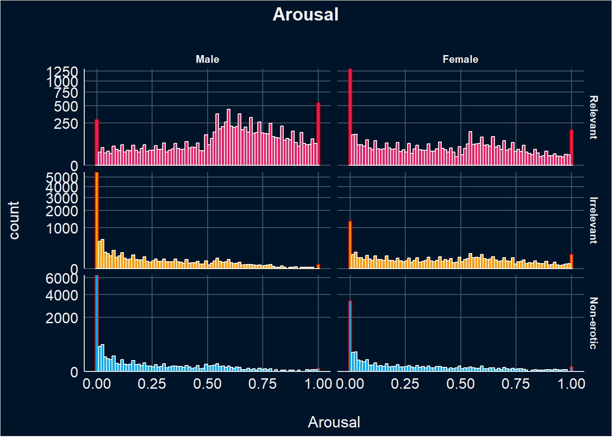
# Get a sense of Random Factors
m1 <- glmmTMB::glmmTMB(Arousal ~ Sex / Relevance + (1|Participant) + (1|Item), data=df)
m2 <- glmmTMB::glmmTMB(Arousal ~ Sex / Relevance + (1+Relevance|Participant) + (1|Item), data=df)
m3 <- glmmTMB::glmmTMB(Arousal ~ Sex / Relevance + (1|Participant) + (1+Sex|Item), data=df)
m4 <- glmmTMB::glmmTMB(Arousal ~ Sex / Relevance + (1|Participant) + (1+Relevance|Item), data=df)
m5 <- glmmTMB::glmmTMB(Arousal ~ Sex / Relevance + (1|Participant) + (1+Sex / Relevance|Item), data=df)
m6 <- glmmTMB::glmmTMB(Arousal ~ Sex / Relevance + (1+Relevance|Participant) + (1+Sex|Item), data=df)
m7 <- glmmTMB::glmmTMB(Arousal ~ Sex / Relevance + (1+Relevance|Participant) + (1+Relevance|Item), data=df)
rbind(
mutate(performance::icc(m1, by_group=TRUE), Model = "m1"),
data.frame(Group = "Conditional R2", ICC = performance::r2(m1)$R2_conditional, Model = "m1"),
mutate(performance::icc(m2, by_group=TRUE), Model = "m2"),
data.frame(Group = "Conditional R2", ICC = performance::r2(m2)$R2_conditional, Model = "m2"),
mutate(performance::icc(m3, by_group=TRUE), Model = "m3"),
data.frame(Group = "Conditional R2", ICC = performance::r2(m3)$R2_conditional, Model = "m3"),
mutate(performance::icc(m4, by_group=TRUE), Model = "m4"),
data.frame(Group = "Conditional R2", ICC = performance::r2(m4)$R2_conditional, Model = "m4"),
mutate(performance::icc(m5, by_group=TRUE), Model = "m5"),
data.frame(Group = "Conditional R2", ICC = performance::r2(m5)$R2_conditional, Model = "m5"),
mutate(performance::icc(m6, by_group=TRUE), Model = "m6"),
data.frame(Group = "Conditional R2", ICC = performance::r2(m6)$R2_conditional, Model = "m6"),
mutate(performance::icc(m7, by_group=TRUE), Model = "m7"),
data.frame(Group = "Conditional R2", ICC = performance::r2(m7)$R2_conditional, Model = "m7")
) |>
ggplot(aes(x = Model, y = ICC, color=Group)) +
geom_line(aes(group=Group))
test_bf(m6, m1, m2, m3, m4, m5, m7)
compare_performance(m2, m7)
# It seems like the full model, with the effect of relevance on participants and items, is the best.This model evaluates the effects of Sex and Relevance on Arousal, accounting for random variability due to participants and items (i.e., random effects).
The analysis revealed that on average women rate relevant stimuli lower in arousal compared to men. Additionally, both genders tend to rate irrelevant and non-erotic stimuli lower in arousal then relevant stimuli, with males showing a stronger reduction for irrelevant stimuli and a comparable one for non-erotic stimuli. Furthermore, females rate irrelevant stimuli higher in arousal than males, whereas both genders rate non-erotic images similarly in terms of arousal.
There is notable variability in arousal ratings across participants, with a greater diversity in responses to irrelevant stimuli compared to relevant ones.There is a strong positive correlation between changes in arousal ratings for irrelevant stimuli and non-erotic stimuli. This suggests that participants who exhibit significant increases or decreases in arousal when exposed to irrelevant stimuli tend to exhibit similar changes when exposed to non-erotic stimuli, indicating consistent trends in arousal levels. There is significant variability in baseline arousal ratings across different items, indicating that different items elicit varying baseline levels of arousal.
m_a <- glmmTMB::glmmTMB(Arousal ~ Sex / Relevance + (Relevance | Participant) + (1|Item),
data=df, family=glmmTMB::ordbeta(),
control = glmmTMB::glmmTMBControl(parallel = 8))
# control = glmmTMB::glmmTMBControl(optimizer=stats::optim, # nlminb, optim
# optArgs = list(method = "BFGS"), #Nelder-Mead, BFGS, CG
# parallel = 8))results_table(m_a)| Parameter | Coefficient | SE | 95% CI | z | p |
|---|---|---|---|---|---|
| (Intercept) | 0.52 | 0.09 | (0.36, 0.69) | 6.16 | < .001 |
| Sex (Female) | -1.21 | 0.13 | (-1.46, -0.96) | -9.64 | < .001 |
| Sex (Male) × RelevanceIrrelevant | -3.62 | 0.13 | (-3.88, -3.36) | -27.06 | < .001 |
| Sex (Female) × RelevanceIrrelevant | -0.28 | 0.15 | (-0.56, 7.41e-03) | -1.91 | 0.056 |
| Sex (Male) × RelevanceNon-erotic | -3.67 | 0.13 | (-3.92, -3.42) | -28.94 | < .001 |
| Sex (Female) × RelevanceNon-erotic | -2.29 | 0.14 | (-2.56, -2.02) | -16.39 | < .001 |
estimate_relation(m_a) |>
ggplot(aes(x=Relevance, y=Predicted)) +
geom_pointrange(aes(ymin=CI_low, ymax=CI_high, color=Relevance), position=position_dodge(width=0.5)) +
scale_color_manual(values=c("Relevant"="#E91E63", "Irrelevant"="#FF9800", "Non-erotic"="#03A9F4"), guide="none") +
labs(y="Arousal") +
facet_wrap(~Sex) +
theme_abyss()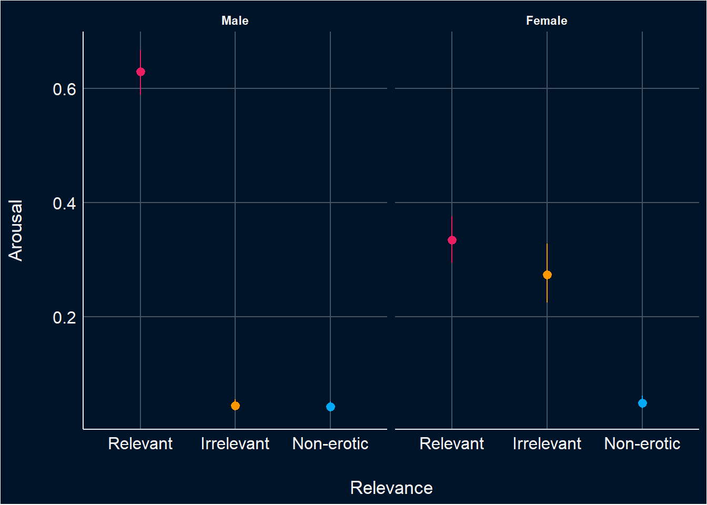
The same type of model seems warranted for enticement.
enticiment <- df |>
mutate(Enticement_Extreme = ifelse(Enticement %in% c(0, 1), "Extreme", "Not extreme")) |>
ggplot(aes(x=Enticement, fill=Relevance)) +
geom_histogram(aes(color=Enticement_Extreme), position = "identity", bins=80) +
facet_grid(Relevance~Sex, scales="free_y") +
scale_color_manual(values=c("red", "white"), guide="none") +
scale_fill_manual(values=c("Relevant"="#E91E63", "Irrelevant"="#FF9800", "Non-erotic"="#03A9F4"), guide="none") +
scale_y_sqrt(expand = c(0, 0)) +
labs(title = "Enticement") +
theme_abyss() +
theme(plot.title = element_text(hjust = 0.5, face="bold"))
enticiment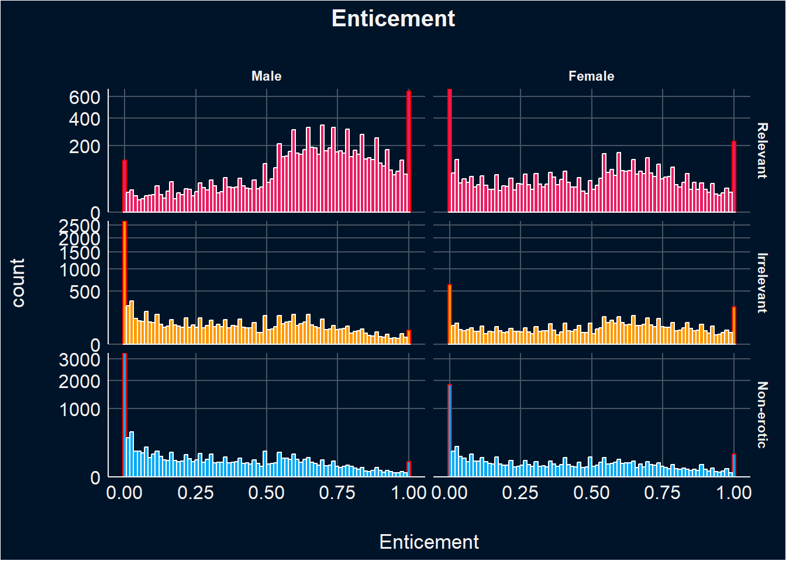
This model evaluates the effects of Sex and Relevance on Enticement ratings, accounting for random variability due to participants and items (i.e., random effects).
In general, women rate relevant images lower in enticement than males. Males rate irrelevant images significantly less enticing than relevant ones, while females do not show a significant difference in enticement ratings between irrelevant and relevant images. Both males and females rate non-erotic images as the least enticing, with a stronger effect for males.
Random effects show considerable participant-to-participant variation in baseline enticement ratings, especially for irrelevant and non-erotic stimuli, compared to relevant stimuli.Participants with higher initial ratings for relevant stimuli tend to show less change in ratings for irrelevant and non-erotic stimuli, though the effect size varies.A notable correlation exists between changes in enticement ratings for irrelevant and non-erotic stimuli, indicating consistent responsiveness across different stimulus types. Lastly, the analysis indicates that different items elicit varying baseline levels of enticement.
m_e <- glmmTMB::glmmTMB(Enticement ~ Sex / Relevance + (Relevance | Participant) + (1|Item),
data=df, family=glmmTMB::ordbeta(),
control = glmmTMB::glmmTMBControl(parallel = 8))results_table(m_e)| Parameter | Coefficient | SE | 95% CI | z | p |
|---|---|---|---|---|---|
| (Intercept) | 0.79 | 0.08 | (0.64, 0.94) | 10.14 | < .001 |
| Sex (Female) | -0.92 | 0.11 | (-1.15, -0.70) | -8.10 | < .001 |
| Sex (Male) × RelevanceIrrelevant | -2.19 | 0.12 | (-2.43, -1.96) | -18.23 | < .001 |
| Sex (Female) × RelevanceIrrelevant | 0.04 | 0.13 | (-0.22, 0.30) | 0.31 | 0.760 |
| Sex (Male) × RelevanceNon-erotic | -2.44 | 0.12 | (-2.67, -2.21) | -20.74 | < .001 |
| Sex (Female) × RelevanceNon-erotic | -1.17 | 0.13 | (-1.43, -0.92) | -9.02 | < .001 |
estimate_relation(m_e) |>
ggplot(aes(x=Relevance, y=Predicted)) +
geom_pointrange(aes(ymin=CI_low, ymax=CI_high, color=Relevance), position=position_dodge(width=0.5)) +
scale_color_manual(values=c("Relevant"="#E91E63", "Irrelevant"="#FF9800", "Non-erotic"="#03A9F4"), guide="none") +
labs(y="Enticement") +
facet_wrap(~Sex) +
theme_abyss()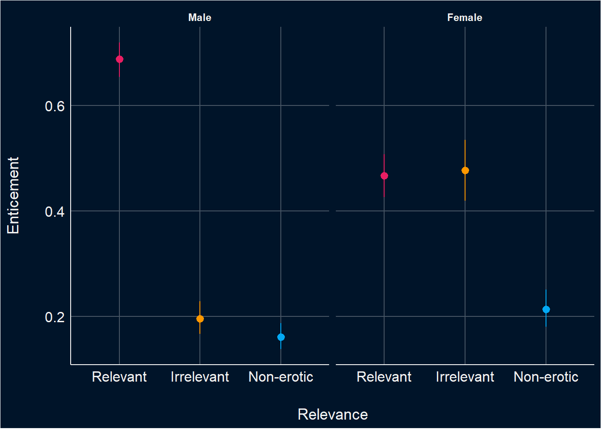
The same type of model seems warranted for valence.
valence <- df |>
mutate(Valence_Extreme = ifelse(Valence %in% c(0, 1), "Extreme", "Not extreme")) |>
ggplot(aes(x=Valence, fill=Relevance)) +
geom_histogram(aes(color=Valence_Extreme), position = "identity", bins=80) +
facet_grid(Relevance~Sex, scales="free_y") +
scale_color_manual(values=c("red", "white"), guide="none") +
scale_fill_manual(values=c("Relevant"="#E91E63", "Irrelevant"="#FF9800", "Non-erotic"="#03A9F4"), guide="none") +
scale_y_sqrt(expand = c(0, 0)) +
labs(title = "Valence") +
theme_abyss() +
theme(plot.title = element_text(hjust = 0.5, face="bold"))
valence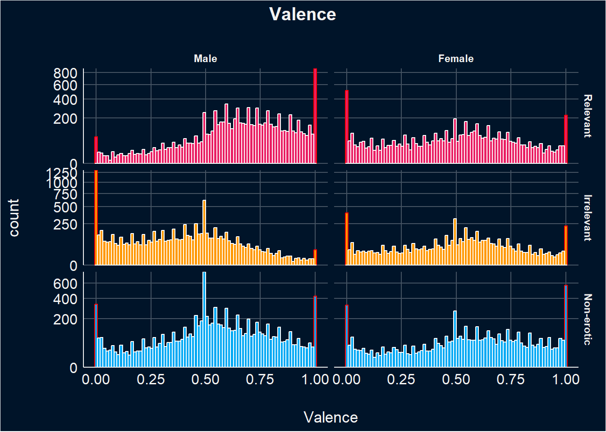
This model is evaluating the effects of Sex and Relevance on Valence ratings, accounting for random variability due to participants and items (i.e., random effects).
The analysis reveals that women rate relevant stimuli significantly lower in valence compared to men. Male participants consistently rate relevant stimuli higher in valence compared to their ratings of irrelevant stimuli, while females do not show significant differences between these stimuli. Both genders rate non-erotic stimuli lower in valence than relevant stimuli and higher than irrelevant ones, with males showing a more pronounced difference.
Participants show diverse baseline valence ratings, especially for irrelevant and non-erotic stimuli, with greater variability observed compared to relevant stimuli. Participants who rate relevant stimuli higher in valence exhibit less change in valence ratings for irrelevant and non-erotic stimuli, indicating consistent individual responses across different types of stimuli.There is a significant correlation between changes in valence ratings for irrelevant and non-erotic stimuli, indicating consistent responsiveness across different stimulus types. Different items elicit varying baseline levels of valence..
m_v <- glmmTMB::glmmTMB(Valence ~ Sex / Relevance + (Relevance | Participant) + (1|Item),
data=df, family=glmmTMB::ordbeta(),
control = glmmTMB::glmmTMBControl(parallel = 8))results_table(m_v)| Parameter | Coefficient | SE | 95% CI | z | p |
|---|---|---|---|---|---|
| (Intercept) | 0.86 | 0.08 | (0.69, 1.02) | 10.13 | < .001 |
| Sex (Female) | -0.96 | 0.12 | (-1.20, -0.72) | -7.77 | < .001 |
| Sex (Male) × RelevanceIrrelevant | -1.64 | 0.12 | (-1.88, -1.41) | -13.49 | < .001 |
| Sex (Female) × RelevanceIrrelevant | 0.04 | 0.13 | (-0.21, 0.30) | 0.33 | 0.741 |
| Sex (Male) × RelevanceNon-erotic | -0.66 | 0.12 | (-0.89, -0.43) | -5.61 | < .001 |
| Sex (Female) × RelevanceNon-erotic | 0.47 | 0.12 | (0.23, 0.71) | 3.85 | < .001 |
estimate_relation(m_v) |>
ggplot(aes(x=Relevance, y=Predicted)) +
geom_pointrange(aes(ymin=CI_low, ymax=CI_high, color=Relevance), position=position_dodge(width=0.5)) +
scale_color_manual(values=c("Relevant"="#E91E63", "Irrelevant"="#FF9800", "Non-erotic"="#03A9F4"), guide="none") +
labs(y="Valence") +
facet_wrap(~Sex) +
theme_abyss()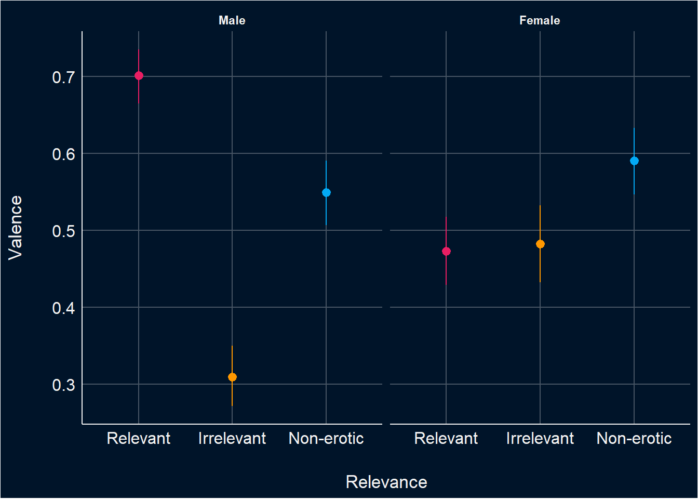
plot_descriptive <- function(df, target="Arousal") {
# By item
order <- df |>
mutate(.Item_Order = paste0(Relevance, "_", Sex, "_", Item)) |>
summarize(mean = mean(.data[[target]], na.rm=TRUE), .by=c("Condition", ".Item_Order")) |>
arrange(.Item_Order, desc(Condition)) |>
mutate(diff = sign(mean - lag(mean)),
Relevance = str_extract(.Item_Order, "^[^_]+"),
.Item_Order = str_extract(.Item_Order, "(?<=_).+")) |>
filter(Condition == "Photograph") |>
arrange(Relevance, diff, mean)
p1 <- df |>
mutate(.Item_Order = paste0(Sex, "_", Item)) |>
group_by(.Item_Order, Condition) |>
ggdist::mean_qi(.data[[target]], .width=0.95) |>
mutate(Sex = fct_rev(str_extract(.Item_Order, "^[^_]+"))) |>
left_join(order[c(".Item_Order", "diff")], by=".Item_Order") |>
mutate(.Item_Order = fct_relevel(.Item_Order, order$.Item_Order)) |>
# mutate(.average = mean(.data[[target]]), .by="Item") |>
# mutate(Item = fct_reorder(Item, .average)) |>
ggplot(aes(y = .Item_Order, x=.data[[target]])) +
geom_line(aes(color=as.factor(diff)), linewidth=1) +
geom_point(aes(color=Condition), size=2) +
# ggdist::stat_slabinterval(aes(fill=Condition, color=Condition),
# .width=0.95, normalize="xy", slab_alpha=0.5) +
# ggdist::stat_histinterval(aes(fill=Condition, color=Condition),
# .width=0.95, normalize="xy", slab_alpha=0.5) +
scale_color_manual(values=c("AI-Generated"="#2196F3", "Photograph"="#F44336", "1"="#F44336", "-1"="#2196F3"),
breaks = c('AI-Generated', 'Photograph')) +
# scale_fill_manual(values=c("AI-Generated"="#2196F3", "Photograph"="#F44336")) +
scale_y_discrete(labels = function(x) str_extract(x, "(?<=_).+")) +
theme_minimal() +
theme(panel.grid.minor.x = element_blank(),
# panel.grid.major.x = element_blank(),
panel.border = element_blank(),
axis.line.x = element_blank()) +
labs(title = paste0(target, " by Item"), color="Condition", y="Items") +
facet_wrap(~Sex, scales="free_y")
# By participant
p2 <- df |>
summarize(.average = mean(.data[[target]]),
.by=c("Sex", "Participant", "Condition")) |>
pivot_wider(names_from = Condition, values_from = .average) |>
mutate(.diff = Photograph - `AI-Generated`) |>
mutate(Participant = fct_reorder(Participant, .diff)) |>
ggplot(aes(x = .diff, y=Participant)) +
geom_bar(aes(fill=.diff), stat = "identity") +
scale_fill_gradient2(guide="none", low="red", high="red", mid="blue") +
labs(title = paste0(target, " by Participant")) +
facet_wrap(~Sex, ncol=2, scales="free_y") +
theme_minimal() +
theme(panel.grid.major.y = element_blank(),
panel.border = element_blank(),
axis.line.x = element_blank(),
axis.text.y = element_blank()) +
labs(title = paste0(target, " by Participant"), x="Difference (Photograph - AI-Generated)", y="Participants")
p1 / p2 + plot_layout(heights = c(2, 1))
}
arousal_desc <- plot_descriptive(df, "Arousal")
arousal_desc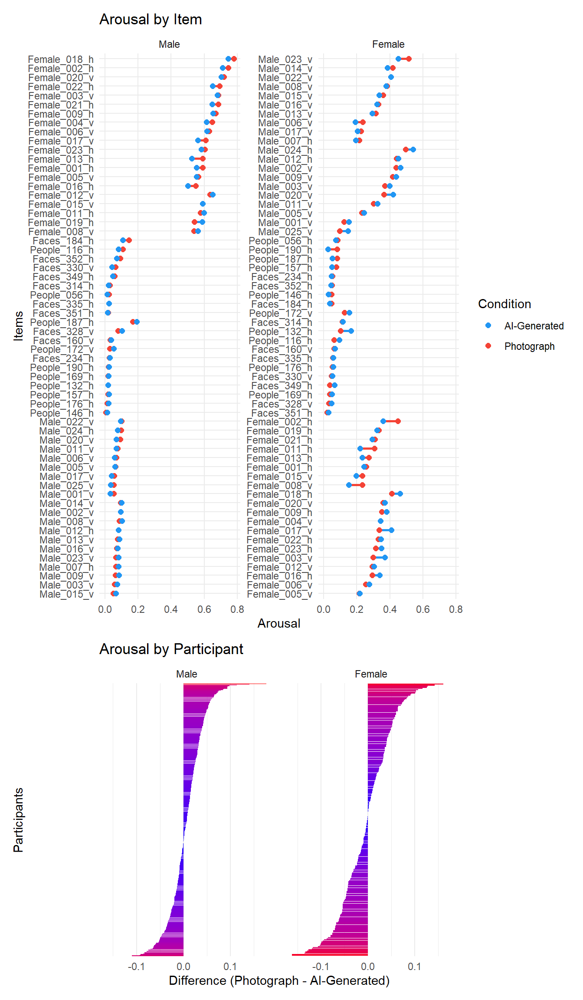
This model examines the effects of Sex, Relevance, and Condition on Arousal, accounting for random variability due to participants and items (i.e., random effects).
Women rate relevant (photograph) stimuli significantly lower in arousal compared to men. Males rate irrelevant (photograph), and non-erotic (photograph), stimuli significantly lower in arousal compared to relevant stimuli. Females also rate non-erotic (photograph) stimuli lower in arousal compared to relevant stimuli. Lastly, males rate AI-Generated images significantly lower in arousal compared to Photograph images.
The analysis also examined the average marginal effect of the variable “Condition” (comparing AI-Generated to Photograph) separately for males and females. For males, the arousal is on average lower for AI-Generated images compared to Photograph images. For females, the arousal is on average higher for AI-Generated images compared to Photograph images; however, this effect is not significant.
m_arousal <- glmmTMB::glmmTMB(Arousal ~ Sex / Relevance / Condition +
(Relevance | Participant) + (1|Item),
data=df, family=glmmTMB::ordbeta(),
control = glmmTMB::glmmTMBControl(parallel = 8))
results_table(m_arousal)| Parameter | Coefficient | SE | 95% CI | z | p |
|---|---|---|---|---|---|
| (Intercept) | 0.57 | 0.09 | (0.40, 0.73) | 6.61 | < .001 |
| Sex (Female) | -1.27 | 0.13 | (-1.52, -1.02) | -10.03 | < .001 |
| Sex (Male) × RelevanceIrrelevant | -3.67 | 0.13 | (-3.93, -3.40) | -27.22 | < .001 |
| Sex (Female) × RelevanceIrrelevant | -0.26 | 0.15 | (-0.55, 0.03) | -1.76 | 0.079 |
| Sex (Male) × RelevanceNon-erotic | -3.68 | 0.13 | (-3.93, -3.43) | -28.75 | < .001 |
| Sex (Female) × RelevanceNon-erotic | -2.30 | 0.14 | (-2.58, -2.03) | -16.25 | < .001 |
| Sex (Male) × RelevanceRelevant × ConditionAI-Generated | -0.08 | 0.02 | (-0.12, -0.05) | -4.74 | < .001 |
| Sex (Female) × RelevanceRelevant × ConditionAI-Generated | 0.04 | 0.03 | (-0.02, 0.09) | 1.36 | 0.173 |
| Sex (Male) × RelevanceIrrelevant × ConditionAI-Generated | 0.01 | 0.03 | (-0.04, 0.06) | 0.42 | 0.677 |
| Sex (Female) × RelevanceIrrelevant × ConditionAI-Generated | -4.65e-03 | 0.03 | (-0.06, 0.05) | -0.18 | 0.859 |
| Sex (Male) × RelevanceNon-erotic × ConditionAI-Generated | -0.07 | 0.03 | (-0.13, -5.91e-03) | -2.15 | 0.031 |
| Sex (Female) × RelevanceNon-erotic × ConditionAI-Generated | 0.06 | 0.04 | (-0.02, 0.14) | 1.53 | 0.127 |
marginaleffects::avg_slopes(m_arousal, variables="Condition", by="Sex", re.form=NA) |>
results_table()| Comparison | Sex | Coefficient | z | p | 95% CI |
|---|---|---|---|---|---|
| AI-Generated - Photograph | Male | -7.21e-03 | -4.86 | < .001 | [-0.01, 0.00] |
| AI-Generated - Photograph | Female | 3.25e-03 | 1.22 | 0.224 | [ 0.00, 0.01] |
When examining the random slopes, it was observed that only males significantly rated arousal lower for AI-generated images compared to photographs. Further analysis of the sample subgroups revealed that this effect was predominantly driven by males from the general population, who significantly contributed to the lower arousal ratings for AI-generated images compared to photographs.
Note. Model converged when adding Relevance and Condition as random slopes of each stimuli.
m <- glmmTMB::glmmTMB(Arousal ~ Sample / Sex / Relevance / Condition + (Relevance | Participant) + ((Relevance / Condition)|Item),
data=df,
family=glmmTMB::ordbeta(),
control = glmmTMB::glmmTMBControl(parallel = 8))Warning in finalizeTMB(TMBStruc, obj, fit, h, data.tmb.old): Model convergence problem; non-positive-definite Hessian matrix. See vignette('troubleshooting')results_table(m, filter="Condition")| Parameter | Coefficient | SE | 95% CI | z | p |
|---|---|---|---|---|---|
| Sample (General Population) × SexMale × RelevanceRelevant × ConditionAI-Generated | -0.09 | 0.02 | (-0.13, -0.05) | -4.46 | < .001 |
| Sample (Students (Incentivized)) × SexMale × RelevanceRelevant × ConditionAI-Generated | -0.07 | 0.06 | (-0.19, 0.05) | -1.20 | 0.228 |
| Sample (Students (Non-incentivized)) × SexMale × RelevanceRelevant × ConditionAI-Generated | -0.06 | 0.05 | (-0.17, 0.05) | -1.08 | 0.279 |
| Sample (General Population) × SexFemale × RelevanceRelevant × ConditionAI-Generated | 0.05 | 0.05 | (-0.05, 0.14) | 1.02 | 0.310 |
| Sample (Students (Incentivized)) × SexFemale × RelevanceRelevant × ConditionAI-Generated | -9.43e-03 | 0.04 | (-0.10, 0.08) | -0.21 | 0.831 |
| Sample (Students (Non-incentivized)) × SexFemale × RelevanceRelevant × ConditionAI-Generated | 0.07 | 0.05 | (-0.02, 0.16) | 1.61 | 0.108 |
| Sample (General Population) × SexMale × RelevanceIrrelevant × ConditionAI-Generated | 0.02 | 0.03 | (-0.04, 0.08) | 0.58 | 0.561 |
| Sample (Students (Incentivized)) × SexMale × RelevanceIrrelevant × ConditionAI-Generated | -0.08 | 0.11 | (-0.31, 0.14) | -0.74 | 0.462 |
| Sample (Students (Non-incentivized)) × SexMale × RelevanceIrrelevant × ConditionAI-Generated | 0.06 | 0.09 | (-0.13, 0.24) | 0.61 | 0.544 |
| Sample (General Population) × SexFemale × RelevanceIrrelevant × ConditionAI-Generated | 0.04 | 0.05 | (-0.06, 0.13) | 0.76 | 0.446 |
| Sample (Students (Incentivized)) × SexFemale × RelevanceIrrelevant × ConditionAI-Generated | 0.01 | 0.04 | (-0.07, 0.10) | 0.24 | 0.809 |
| Sample (Students (Non-incentivized)) × SexFemale × RelevanceIrrelevant × ConditionAI-Generated | -0.06 | 0.05 | (-0.15, 0.03) | -1.33 | 0.184 |
| Sample (General Population) × SexMale × RelevanceNon-erotic × ConditionAI-Generated | -0.06 | 0.04 | (-0.13, 0.02) | -1.42 | 0.155 |
| Sample (Students (Incentivized)) × SexMale × RelevanceNon-erotic × ConditionAI-Generated | -9.32e-03 | 0.13 | (-0.26, 0.24) | -0.07 | 0.941 |
| Sample (Students (Non-incentivized)) × SexMale × RelevanceNon-erotic × ConditionAI-Generated | -0.18 | 0.11 | (-0.39, 0.02) | -1.73 | 0.084 |
| Sample (General Population) × SexFemale × RelevanceNon-erotic × ConditionAI-Generated | 0.07 | 0.08 | (-0.08, 0.22) | 0.86 | 0.390 |
| Sample (Students (Incentivized)) × SexFemale × RelevanceNon-erotic × ConditionAI-Generated | 0.04 | 0.07 | (-0.10, 0.19) | 0.57 | 0.570 |
| Sample (Students (Non-incentivized)) × SexFemale × RelevanceNon-erotic × ConditionAI-Generated | 0.08 | 0.07 | (-0.05, 0.22) | 1.24 | 0.214 |
We investigated the influence of using a mobile device (mobile = TRUE) versus other devices on arousal ratings, considering the effects of condition and relevance.
Males rated relevant AI-generated images significantly lower in arousal compared to relevant photographs, irrespective of whether they used a mobile device or not. However, this effect was more pronounced among male participants who used a mobile device.
We also explored whether the interaction between condition (AI-Generated vs. Photograph) and screen size affected arousal levels. No statistically significant results were found for this interaction.
Note. Model converged when adding Relevance and Condition as random slopes of each stimuli.
m <- glmmTMB::glmmTMB(Arousal ~ Mobile / Sex / Relevance / Condition + (Relevance | Participant) + ((Relevance / Condition)|Item),
data=df,
family=glmmTMB::ordbeta(),
control = glmmTMB::glmmTMBControl(parallel = 8))Warning in finalizeTMB(TMBStruc, obj, fit, h, data.tmb.old): Model convergence problem; non-positive-definite Hessian matrix. See vignette('troubleshooting')results_table(m, filter="Condition")| Parameter | Coefficient | SE | 95% CI | z | p |
|---|---|---|---|---|---|
| Mobile (False) × SexMale × RelevanceRelevant × ConditionAI-Generated | -0.07 | 0.02 | (-0.11, -0.02) | -2.84 | 0.005 |
| Mobile (True) × SexMale × RelevanceRelevant × ConditionAI-Generated | -0.13 | 0.03 | (-0.19, -0.07) | -4.22 | < .001 |
| Mobile (False) × SexFemale × RelevanceRelevant × ConditionAI-Generated | 0.05 | 0.03 | (-0.01, 0.11) | 1.51 | 0.131 |
| Mobile (True) × SexFemale × RelevanceRelevant × ConditionAI-Generated | 6.81e-03 | 0.05 | (-0.09, 0.11) | 0.13 | 0.894 |
| Mobile (False) × SexMale × RelevanceIrrelevant × ConditionAI-Generated | 9.14e-03 | 0.04 | (-0.07, 0.08) | 0.24 | 0.810 |
| Mobile (True) × SexMale × RelevanceIrrelevant × ConditionAI-Generated | 0.02 | 0.04 | (-0.06, 0.10) | 0.55 | 0.580 |
| Mobile (False) × SexFemale × RelevanceIrrelevant × ConditionAI-Generated | -0.01 | 0.03 | (-0.08, 0.05) | -0.45 | 0.651 |
| Mobile (True) × SexFemale × RelevanceIrrelevant × ConditionAI-Generated | 0.02 | 0.05 | (-0.08, 0.12) | 0.41 | 0.678 |
| Mobile (False) × SexMale × RelevanceNon-erotic × ConditionAI-Generated | -0.06 | 0.05 | (-0.16, 0.03) | -1.29 | 0.197 |
| Mobile (True) × SexMale × RelevanceNon-erotic × ConditionAI-Generated | -0.06 | 0.05 | (-0.16, 0.03) | -1.36 | 0.175 |
| Mobile (False) × SexFemale × RelevanceNon-erotic × ConditionAI-Generated | 0.04 | 0.05 | (-0.06, 0.15) | 0.75 | 0.452 |
| Mobile (True) × SexFemale × RelevanceNon-erotic × ConditionAI-Generated | 0.11 | 0.07 | (-0.03, 0.25) | 1.61 | 0.108 |
m <- glmmTMB::glmmTMB(Arousal ~ Sex / Relevance / (Condition * Screen_Size) + (Relevance | Participant) + ((Relevance/Condition)|Item),
data=standardize(df, select="Screen_Size"),
family=glmmTMB::ordbeta(),
control = glmmTMB::glmmTMBControl(parallel = 8))Warning in finalizeTMB(TMBStruc, obj, fit, h, data.tmb.old): Model convergence problem; non-positive-definite Hessian matrix. See vignette('troubleshooting')results_table(m, filter="Screen")| Parameter | Coefficient | SE | 95% CI | z | p |
|---|---|---|---|---|---|
| Sex (Male) × RelevanceRelevant × Screen Size | 0.01 | 0.04 | (-0.07, 0.09) | 0.29 | 0.772 |
| Sex (Female) × RelevanceRelevant × Screen Size | 0.09 | 0.07 | (-0.05, 0.24) | 1.22 | 0.222 |
| Sex (Male) × RelevanceIrrelevant × Screen Size | 0.12 | 0.08 | (-0.05, 0.28) | 1.40 | 0.160 |
| Sex (Female) × RelevanceIrrelevant × Screen Size | 0.08 | 0.15 | (-0.21, 0.36) | 0.52 | 0.603 |
| Sex (Male) × RelevanceNon-erotic × Screen Size | 0.04 | 0.07 | (-0.10, 0.18) | 0.50 | 0.614 |
| Sex (Female) × RelevanceNon-erotic × Screen Size | 0.16 | 0.13 | (-0.09, 0.42) | 1.25 | 0.212 |
| Sex (Male) × RelevanceRelevant × ConditionAI-Generated × Screen Size | -0.02 | 0.02 | (-0.05, 0.01) | -1.23 | 0.220 |
| Sex (Female) × RelevanceRelevant × ConditionAI-Generated × Screen Size | -0.04 | 0.03 | (-0.11, 0.03) | -1.14 | 0.252 |
| Sex (Male) × RelevanceIrrelevant × ConditionAI-Generated × Screen Size | 0.03 | 0.03 | (-0.02, 0.08) | 1.10 | 0.272 |
| Sex (Female) × RelevanceIrrelevant × ConditionAI-Generated × Screen Size | 0.05 | 0.03 | (-0.02, 0.12) | 1.44 | 0.151 |
| Sex (Male) × RelevanceNon-erotic × ConditionAI-Generated × Screen Size | -0.01 | 0.03 | (-0.07, 0.05) | -0.35 | 0.726 |
| Sex (Female) × RelevanceNon-erotic × ConditionAI-Generated × Screen Size | 0.08 | 0.05 | (-0.03, 0.18) | 1.46 | 0.144 |
This model explores whether various factors such as attitudes towards AI, knowledge about AI, porn usage, frequency of porn consumption, and sexual activity moderate the relationship between sex, image relevance (specifically AI-generated versus photographs), and arousal ratings.
The analysis revealed a significant interaction effect only for porn usage among females. Specifically, females with higher levels of porn usage rated AI-generated images significantly lower in arousal compared to photographs. No other moderators showed statistically significant effects on arousal ratings across the interactions of sex, condition (AI-Generated vs. Photograph), and the respective moderators.
We also examined whether feedback moderates the relationship between sex, condition, and relevance on arousal, we found the following significant effects:
Findings suggest that feedback about the arousal potential of AI-generated images can significantly moderate arousal ratings, with females being more positively influenced by feedback that AI images are more arousing, and males being more negatively influenced by feedback that AI images are less arousing.
test_moderator <- function(df, outcome="Arousal", moderator="BAIT_Visual") {
f <- paste0(outcome, " ~ Sex / (Condition * ", moderator, ") + (Condition | Participant) + (1|Item)")
r <- glmmTMB::glmmTMB(as.formula(f),
data=filter(df, Relevance == "Relevant"),
family=glmmTMB::ordbeta(),
control = glmmTMB::glmmTMBControl(parallel = 8)) |>
parameters::parameters() |>
as.data.frame() |>
select(-df_error, -Effects, -Group, -Component, -SE)
r$Moderator <- moderator
r$Outcome <- outcome
insight::format_table(r[c(7, 8), ])
}
moderator_results <- data.frame()
for(m in c("BAIT_Visual", "BAIT_Text", "AI_Knowledge",
"GAAIS_Positive", "GAAIS_Negative",
"Porn", "PornFrequency", "SexualActivity_num")) {
moderator_results <- rbind(moderator_results,
test_moderator(df, "Arousal", m))
}
display(moderator_results)| Parameter | Coefficient | 95% CI | z | p | Moderator | Outcome |
|---|---|---|---|---|---|---|
| Sex [Male] × ConditionAI-Generated × BAIT Visual | -0.11 | [-0.34, 0.11] | -0.97 | 0.334 | BAIT_Visual | Arousal |
| Sex [Female] × ConditionAI-Generated × BAIT Visual | 0.28 | [-0.11, 0.66] | 1.39 | 0.164 | BAIT_Visual | Arousal |
| Sex [Male] × ConditionAI-Generated × BAIT Text | 0.02 | [-0.14, 0.18] | 0.26 | 0.792 | BAIT_Text | Arousal |
| Sex [Female] × ConditionAI-Generated × BAIT Text | 0.02 | [-0.25, 0.29] | 0.16 | 0.876 | BAIT_Text | Arousal |
| Sex [Male] × ConditionAI-Generated × AI Knowledge | 0.03 | [-0.01, 0.06] | 1.47 | 0.142 | AI_Knowledge | Arousal |
| Sex [Female] × ConditionAI-Generated × AI Knowledge | 9.70e-03 | [-0.03, 0.05] | 0.44 | 0.658 | AI_Knowledge | Arousal |
| Sex [Male] × ConditionAI-Generated × GAAIS Positive | 0.07 | [-0.11, 0.26] | 0.79 | 0.430 | GAAIS_Positive | Arousal |
| Sex [Female] × ConditionAI-Generated × GAAIS Positive | 0.21 | [-0.08, 0.51] | 1.42 | 0.157 | GAAIS_Positive | Arousal |
| Sex [Male] × ConditionAI-Generated × GAAIS Negative | -0.04 | [-0.20, 0.12] | -0.49 | 0.621 | GAAIS_Negative | Arousal |
| Sex [Female] × ConditionAI-Generated × GAAIS Negative | 0.14 | [-0.14, 0.42] | 0.97 | 0.331 | GAAIS_Negative | Arousal |
| Sex [Male] × ConditionAI-Generated × Porn | -0.04 | [-0.09, 0.02] | -1.39 | 0.164 | Porn | Arousal |
| Sex [Female] × ConditionAI-Generated × Porn | -0.08 | [-0.16, 0.00] | -2.00 | 0.046 | Porn | Arousal |
| Sex [Male] × ConditionAI-Generated × PornFrequency | -0.01 | [-0.04, 0.01] | -0.92 | 0.358 | PornFrequency | Arousal |
| Sex [Female] × ConditionAI-Generated × PornFrequency | -0.03 | [-0.07, 0.01] | -1.48 | 0.138 | PornFrequency | Arousal |
| Sex [Male] × ConditionAI-Generated × SexualActivity num | 2.14e-03 | [-0.03, 0.04] | 0.12 | 0.907 | SexualActivity_num | Arousal |
| Sex [Female] × ConditionAI-Generated × SexualActivity num | -5.65e-03 | [-0.05, 0.04] | -0.26 | 0.791 | SexualActivity_num | Arousal |
feedback_results <- data.frame()
for(m in c("Feedback_CouldDiscriminate", "Feedback_CouldNotDiscriminate",
"Feedback_AIMoreArousing", "Feedback_AILessArousing",
"Feedback_LabelsIncorrect", "Feedback_LabelsReversed")) {
feedback_results <- rbind(feedback_results,
test_moderator(df, "Arousal", m))
}
display(feedback_results)| Parameter | Coefficient | 95% CI | z | p | Moderator | Outcome |
|---|---|---|---|---|---|---|
| Sex [Male] × ConditionAI-Generated × Feedback CouldDiscriminateTrue | 0.07 | [-0.07, 0.22] | 0.98 | 0.328 | Feedback_CouldDiscriminate | Arousal |
| Sex [Female] × ConditionAI-Generated × Feedback CouldDiscriminateTrue | -0.15 | [-0.39, 0.09] | -1.24 | 0.217 | Feedback_CouldDiscriminate | Arousal |
| Sex [Male] × ConditionAI-Generated × Feedback CouldNotDiscriminateTrue | 9.14e-03 | [-0.07, 0.09] | 0.23 | 0.815 | Feedback_CouldNotDiscriminate | Arousal |
| Sex [Female] × ConditionAI-Generated × Feedback CouldNotDiscriminateTrue | 0.03 | [-0.08, 0.14] | 0.48 | 0.633 | Feedback_CouldNotDiscriminate | Arousal |
| Sex [Male] × ConditionAI-Generated × Feedback AIMoreArousingTrue | 5.61e-03 | [-0.13, 0.14] | 0.08 | 0.934 | Feedback_AIMoreArousing | Arousal |
| Sex [Female] × ConditionAI-Generated × Feedback AIMoreArousingTrue | 0.16 | [ 0.01, 0.30] | 2.03 | 0.042 | Feedback_AIMoreArousing | Arousal |
| Sex [Male] × ConditionAI-Generated × Feedback AILessArousingTrue | -0.16 | [-0.28, -0.04] | -2.61 | 0.009 | Feedback_AILessArousing | Arousal |
| Sex [Female] × ConditionAI-Generated × Feedback AILessArousingTrue | 0.18 | [ 0.00, 0.37] | 1.91 | 0.056 | Feedback_AILessArousing | Arousal |
| Sex [Male] × ConditionAI-Generated × Feedback LabelsIncorrectTrue | -0.03 | [-0.10, 0.05] | -0.70 | 0.485 | Feedback_LabelsIncorrect | Arousal |
| Sex [Female] × ConditionAI-Generated × Feedback LabelsIncorrectTrue | -0.06 | [-0.18, 0.06] | -0.98 | 0.329 | Feedback_LabelsIncorrect | Arousal |
| Sex [Male] × ConditionAI-Generated × Feedback LabelsReversedTrue | -0.11 | [-0.28, 0.07] | -1.20 | 0.230 | Feedback_LabelsReversed | Arousal |
| Sex [Female] × ConditionAI-Generated × Feedback LabelsReversedTrue | 7.56e-03 | [-0.20, 0.21] | 0.07 | 0.943 | Feedback_LabelsReversed | Arousal |
m <- glmmTMB::glmmTMB(Arousal ~ Sex / Relevance / Condition + (Relevance | Participant) + ((Relevance/Condition)|Item),
data=filter(df, ConditionBelief == "True"),
family=glmmTMB::ordbeta(),
control = glmmTMB::glmmTMBControl(parallel = 8))Warning in finalizeTMB(TMBStruc, obj, fit, h, data.tmb.old): Model convergence problem; non-positive-definite Hessian matrix. See vignette('troubleshooting')Warning in finalizeTMB(TMBStruc, obj, fit, h, data.tmb.old): Model convergence problem; singular convergence (7). See vignette('troubleshooting'), help('diagnose') results_table(m)| Parameter | Coefficient | SE | 95% CI | z | p |
|---|---|---|---|---|---|
| (Intercept) | 0.62 | 0.10 | (0.43, 0.81) | 6.33 | < .001 |
| Sex (Female) | -1.20 | 0.14 | (-1.48, -0.92) | -8.34 | < .001 |
| Sex (Male) × RelevanceIrrelevant | -3.66 | 0.14 | (-3.92, -3.39) | -26.80 | < .001 |
| Sex (Female) × RelevanceIrrelevant | -0.31 | 0.15 | (-0.59, -0.02) | -2.09 | 0.036 |
| Sex (Male) × RelevanceNon-erotic | -3.78 | 0.15 | (-4.07, -3.49) | -25.20 | < .001 |
| Sex (Female) × RelevanceNon-erotic | -2.39 | 0.16 | (-2.71, -2.07) | -14.69 | < .001 |
| Sex (Male) × RelevanceRelevant × ConditionAI-Generated | -0.39 | 0.04 | (-0.47, -0.30) | -9.28 | < .001 |
| Sex (Female) × RelevanceRelevant × ConditionAI-Generated | -0.37 | 0.05 | (-0.47, -0.27) | -7.07 | < .001 |
| Sex (Male) × RelevanceIrrelevant × ConditionAI-Generated | -0.07 | 0.06 | (-0.18, 0.04) | -1.24 | 0.215 |
| Sex (Female) × RelevanceIrrelevant × ConditionAI-Generated | -0.17 | 0.06 | (-0.27, -0.06) | -2.99 | 0.003 |
| Sex (Male) × RelevanceNon-erotic × ConditionAI-Generated | -0.18 | 0.07 | (-0.33, -0.04) | -2.46 | 0.014 |
| Sex (Female) × RelevanceNon-erotic × ConditionAI-Generated | -0.08 | 0.10 | (-0.27, 0.11) | -0.86 | 0.389 |
moderator_believed <- data.frame()
for(m in c("BAIT_Visual", "BAIT_Text", "AI_Knowledge",
"GAAIS_Positive", "GAAIS_Negative",
"Porn", "PornFrequency", "SexualActivity_num",
"Feedback_CouldDiscriminate", "Feedback_CouldNotDiscriminate",
"Feedback_AIMoreArousing", "Feedback_AILessArousing",
"Feedback_LabelsIncorrect", "Feedback_LabelsReversed")) {
moderator_believed <- rbind(moderator_believed,
test_moderator(filter(df, ConditionBelief == "True"), "Arousal", m))
}
display(filter(moderator_believed, p < .1))| Parameter | Coefficient | 95% CI | z | p | Moderator | Outcome |
|---|---|---|---|---|---|---|
| Sex [Female] × ConditionAI-Generated × GAAIS Negative | 0.51 | [-0.06, 1.07] | 1.76 | 0.078 | GAAIS_Negative | Arousal |
| Sex [Female] × ConditionAI-Generated × Porn | -0.15 | [-0.31, 0.00] | -1.92 | 0.055 | Porn | Arousal |
| Sex [Female] × ConditionAI-Generated × SexualActivity num | -0.09 | [-0.17, -0.01] | -2.11 | 0.035 | SexualActivity_num | Arousal |
| Sex [Male] × ConditionAI-Generated × Feedback AILessArousingTrue | -0.36 | [-0.58, -0.15] | -3.35 | < .001 | Feedback_AILessArousing | Arousal |
enticement_desc <- plot_descriptive(df, "Enticement")
enticement_desc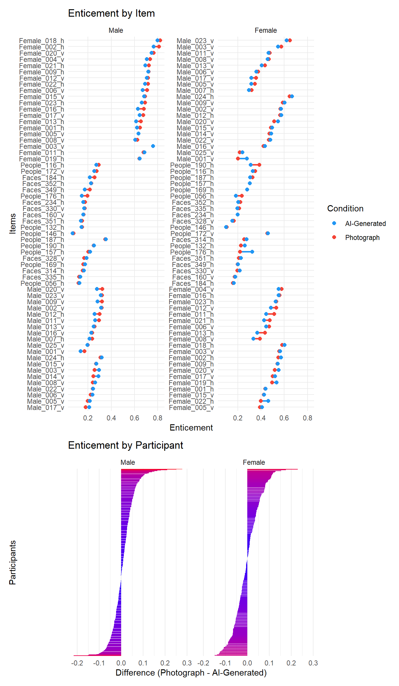
This model examines how Sex, Relevance, and Condition influence Enticement ratings, treating relevance within each participant and items as random effects.
Females consistently rate relevant (photograph) images significantly lower in enticement compared to males. Conversely, men rate irrelevant images (photographs) significantly lower in enticement than relevant ones, although this difference is not observed among females. Both genders rate non-erotic images (photographs) significantly lower in enticement than relevant ones. Interestingly, neither gender shows a significant difference in enticement ratings between AI-generated images and photographs, regardless of relevance.
We also analyzed the average marginal effect of the variable “Condition” (comparing AI-Generated to Photograph) separately for males and females.
For males, enticement ratings are significantly lower on average for AI-Generated images compared to Photograph images. For females, enticement ratings are slightly higher on average for AI-Generated images compared to Photograph images, although this difference is not statistically significant.
Note. Model adding Relevance and Condition as random slopes for each stimuli converged
m_enticement <- glmmTMB::glmmTMB(Enticement ~ Sex / Relevance / Condition +
(Relevance | Participant) + (1|Item),
data=df, family=glmmTMB::ordbeta(),
control = glmmTMB::glmmTMBControl(parallel = 8))
results_table(m_enticement)| Parameter | Coefficient | SE | 95% CI | z | p |
|---|---|---|---|---|---|
| (Intercept) | 0.83 | 0.08 | (0.68, 0.99) | 10.62 | < .001 |
| Sex (Female) | -0.98 | 0.11 | (-1.20, -0.75) | -8.51 | < .001 |
| Sex (Male) × RelevanceIrrelevant | -2.23 | 0.12 | (-2.47, -1.99) | -18.45 | < .001 |
| Sex (Female) × RelevanceIrrelevant | 0.06 | 0.13 | (-0.21, 0.32) | 0.43 | 0.669 |
| Sex (Male) × RelevanceNon-erotic | -2.46 | 0.12 | (-2.69, -2.22) | -20.74 | < .001 |
| Sex (Female) × RelevanceNon-erotic | -1.17 | 0.13 | (-1.42, -0.91) | -8.89 | < .001 |
| Sex (Male) × RelevanceRelevant × ConditionAI-Generated | -0.08 | 0.02 | (-0.12, -0.05) | -4.68 | < .001 |
| Sex (Female) × RelevanceRelevant × ConditionAI-Generated | 0.02 | 0.02 | (-0.02, 0.07) | 0.99 | 0.323 |
| Sex (Male) × RelevanceIrrelevant × ConditionAI-Generated | -5.40e-03 | 0.02 | (-0.05, 0.03) | -0.26 | 0.792 |
| Sex (Female) × RelevanceIrrelevant × ConditionAI-Generated | -9.63e-03 | 0.03 | (-0.06, 0.04) | -0.38 | 0.700 |
| Sex (Male) × RelevanceNon-erotic × ConditionAI-Generated | -0.05 | 0.02 | (-0.09, -8.37e-03) | -2.34 | 0.019 |
| Sex (Female) × RelevanceNon-erotic × ConditionAI-Generated | 0.01 | 0.03 | (-0.04, 0.07) | 0.45 | 0.654 |
marginaleffects::avg_slopes(m_enticement, variables="Condition", by="Sex", re.form=NA) |>
results_table()| Comparison | Sex | Coefficient | z | p | 95% CI |
|---|---|---|---|---|---|
| AI-Generated - Photograph | Male | -8.68e-03 | -4.40 | < .001 | [-0.01, 0.00] |
| AI-Generated - Photograph | Female | 1.94e-03 | 0.58 | 0.560 | [ 0.00, 0.01] |
Here we examined the interaction between Sample (different participant groups), Sex, Relevance, and Condition (AI-Generated vs. Photograph) on enticement ratings.
These findings indicate that in the General Population and Students (Non-incentivized) samples, males show a preference for relevant Photograph images over relevant AI-Generated images in terms of enticement, while females tend to rate relevant AI-Generated images higher in enticement. The differences in enticement ratings between AI-Generated and Photograph images were not significant in other samples or conditions examined.
Note. Model adding Relevance and Condition as random slopes for each stimuli converged.
m <- glmmTMB::glmmTMB(Enticement ~ Sample / Sex / Relevance / Condition + (Relevance | Participant) + ((Relevance/Condition)|Item),
data=df,
family=glmmTMB::ordbeta(),
control = glmmTMB::glmmTMBControl(parallel = 8))Warning in finalizeTMB(TMBStruc, obj, fit, h, data.tmb.old): Model convergence problem; non-positive-definite Hessian matrix. See vignette('troubleshooting')Warning in finalizeTMB(TMBStruc, obj, fit, h, data.tmb.old): Model convergence problem; singular convergence (7). See vignette('troubleshooting'), help('diagnose')results_table(m, filter="Condition")| Parameter | Coefficient | SE | 95% CI | z | p |
|---|---|---|---|---|---|
| Sample (General Population) × SexMale × RelevanceRelevant × ConditionAI-Generated | -0.10 | 0.02 | (-0.14, -0.06) | -4.73 | < .001 |
| Sample (Students (Incentivized)) × SexMale × RelevanceRelevant × ConditionAI-Generated | -0.07 | 0.06 | (-0.19, 0.05) | -1.16 | 0.247 |
| Sample (Students (Non-incentivized)) × SexMale × RelevanceRelevant × ConditionAI-Generated | -0.03 | 0.06 | (-0.14, 0.09) | -0.45 | 0.656 |
| Sample (General Population) × SexFemale × RelevanceRelevant × ConditionAI-Generated | 9.39e-03 | 0.05 | (-0.08, 0.10) | 0.20 | 0.841 |
| Sample (Students (Incentivized)) × SexFemale × RelevanceRelevant × ConditionAI-Generated | -0.04 | 0.04 | (-0.12, 0.04) | -1.09 | 0.275 |
| Sample (Students (Non-incentivized)) × SexFemale × RelevanceRelevant × ConditionAI-Generated | 0.12 | 0.04 | (0.03, 0.20) | 2.66 | 0.008 |
| Sample (General Population) × SexMale × RelevanceIrrelevant × ConditionAI-Generated | -6.55e-03 | 0.02 | (-0.05, 0.04) | -0.29 | 0.771 |
| Sample (Students (Incentivized)) × SexMale × RelevanceIrrelevant × ConditionAI-Generated | -0.09 | 0.08 | (-0.24, 0.07) | -1.11 | 0.269 |
| Sample (Students (Non-incentivized)) × SexMale × RelevanceIrrelevant × ConditionAI-Generated | 0.05 | 0.07 | (-0.09, 0.18) | 0.65 | 0.513 |
| Sample (General Population) × SexFemale × RelevanceIrrelevant × ConditionAI-Generated | -6.90e-03 | 0.05 | (-0.10, 0.08) | -0.15 | 0.882 |
| Sample (Students (Incentivized)) × SexFemale × RelevanceIrrelevant × ConditionAI-Generated | -0.04 | 0.04 | (-0.12, 0.04) | -0.90 | 0.368 |
| Sample (Students (Non-incentivized)) × SexFemale × RelevanceIrrelevant × ConditionAI-Generated | 0.03 | 0.04 | (-0.06, 0.11) | 0.60 | 0.550 |
| Sample (General Population) × SexMale × RelevanceNon-erotic × ConditionAI-Generated | -0.05 | 0.02 | (-0.10, -5.95e-03) | -2.20 | 0.028 |
| Sample (Students (Incentivized)) × SexMale × RelevanceNon-erotic × ConditionAI-Generated | 0.11 | 0.08 | (-0.05, 0.27) | 1.36 | 0.173 |
| Sample (Students (Non-incentivized)) × SexMale × RelevanceNon-erotic × ConditionAI-Generated | -0.16 | 0.07 | (-0.29, -0.03) | -2.34 | 0.020 |
| Sample (General Population) × SexFemale × RelevanceNon-erotic × ConditionAI-Generated | 7.01e-03 | 0.05 | (-0.09, 0.11) | 0.14 | 0.892 |
| Sample (Students (Incentivized)) × SexFemale × RelevanceNon-erotic × ConditionAI-Generated | -0.03 | 0.05 | (-0.12, 0.07) | -0.53 | 0.594 |
| Sample (Students (Non-incentivized)) × SexFemale × RelevanceNon-erotic × ConditionAI-Generated | 0.06 | 0.05 | (-0.04, 0.15) | 1.13 | 0.260 |
Here, we explored the impact of using a mobile device (mobile = TRUE) versus not using one as a predictor of enticement, alongside condition, sex, and relevance.
We observed that males rated relevant AI-generated images significantly lower in enticement compared to relevant photographs, regardless of whether they used a mobile device or not. However, this effect was more pronounced among males using a mobile device. Additionally, for males, using a mobile device influenced enticement ratings for non-erotic stimuli, where they rated AI-generated non-erotic stimuli lower in enticement compared to non-erotic photographs.
Note. Model adding Relevance and Condition as random slopes for each stimuli converged.
m <- glmmTMB::glmmTMB(Enticement ~ Mobile / Sex / Relevance / Condition + (Relevance | Participant) + ((Relevance/Condition)|Item),
data=df,
family=glmmTMB::ordbeta(),
control = glmmTMB::glmmTMBControl(parallel = 8))Warning in finalizeTMB(TMBStruc, obj, fit, h, data.tmb.old): Model convergence problem; non-positive-definite Hessian matrix. See vignette('troubleshooting')Warning in finalizeTMB(TMBStruc, obj, fit, h, data.tmb.old): Model convergence problem; singular convergence (7). See vignette('troubleshooting'), help('diagnose')results_table(m, filter="Condition")| Parameter | Coefficient | SE | 95% CI | z | p |
|---|---|---|---|---|---|
| Mobile (False) × SexMale × RelevanceRelevant × ConditionAI-Generated | -0.07 | 0.02 | (-0.12, -0.03) | -3.19 | 0.001 |
| Mobile (True) × SexMale × RelevanceRelevant × ConditionAI-Generated | -0.11 | 0.03 | (-0.18, -0.05) | -3.73 | < .001 |
| Mobile (False) × SexFemale × RelevanceRelevant × ConditionAI-Generated | 0.04 | 0.03 | (-0.02, 0.09) | 1.22 | 0.224 |
| Mobile (True) × SexFemale × RelevanceRelevant × ConditionAI-Generated | -9.76e-03 | 0.05 | (-0.11, 0.09) | -0.19 | 0.847 |
| Mobile (False) × SexMale × RelevanceIrrelevant × ConditionAI-Generated | -0.05 | 0.03 | (-0.10, 3.65e-03) | -1.82 | 0.068 |
| Mobile (True) × SexMale × RelevanceIrrelevant × ConditionAI-Generated | 0.06 | 0.03 | (-8.07e-03, 0.12) | 1.71 | 0.086 |
| Mobile (False) × SexFemale × RelevanceIrrelevant × ConditionAI-Generated | -0.03 | 0.03 | (-0.08, 0.03) | -0.93 | 0.354 |
| Mobile (True) × SexFemale × RelevanceIrrelevant × ConditionAI-Generated | 0.05 | 0.05 | (-0.05, 0.15) | 1.02 | 0.306 |
| Mobile (False) × SexMale × RelevanceNon-erotic × ConditionAI-Generated | -0.03 | 0.03 | (-0.09, 0.02) | -1.08 | 0.280 |
| Mobile (True) × SexMale × RelevanceNon-erotic × ConditionAI-Generated | -0.09 | 0.04 | (-0.16, -0.02) | -2.47 | 0.014 |
| Mobile (False) × SexFemale × RelevanceNon-erotic × ConditionAI-Generated | 0.01 | 0.03 | (-0.06, 0.08) | 0.31 | 0.756 |
| Mobile (True) × SexFemale × RelevanceNon-erotic × ConditionAI-Generated | 0.02 | 0.06 | (-0.09, 0.13) | 0.31 | 0.753 |
We examined whether attitudes towards AI, porn usage and frequency, and sexual activity moderated the relationship between the predictors (sex, relevance, condition) and enticement ratings. The results indicated that no moderator was significant.
Looking at feedback as a moderator, the results showed that enticement ratings for images labeled AI-generated were moderated by the feedback that AI is more arousing, but this was only significant for women. Specifically, women who reported that AI-generated images as more arousing rated these images higher in enticement compared to images labeled as photographs.
Lastly, the interaction between sexual activity and condition on enticement, suggests that for females, the effect of AI-Generated condition on enticing ratings varies with different levels of sexual activity.
for(m in c("BAIT_Visual", "BAIT_Text", "AI_Knowledge",
"GAAIS_Positive", "GAAIS_Negative",
"Porn", "PornFrequency", "SexualActivity_num")) {
moderator_results <- rbind(moderator_results,
test_moderator(df, "Enticement", m))
}
display(filter(moderator_results, Outcome == "Enticement"))| Parameter | Coefficient | 95% CI | z | p | Moderator | Outcome |
|---|---|---|---|---|---|---|
| Sex [Male] × ConditionAI-Generated × BAIT Visual | 0.10 | [-0.13, 0.32] | 0.84 | 0.401 | BAIT_Visual | Enticement |
| Sex [Female] × ConditionAI-Generated × BAIT Visual | 0.27 | [-0.09, 0.63] | 1.47 | 0.143 | BAIT_Visual | Enticement |
| Sex [Male] × ConditionAI-Generated × BAIT Text | 0.02 | [-0.14, 0.18] | 0.28 | 0.783 | BAIT_Text | Enticement |
| Sex [Female] × ConditionAI-Generated × BAIT Text | 0.10 | [-0.15, 0.35] | 0.78 | 0.437 | BAIT_Text | Enticement |
| Sex [Male] × ConditionAI-Generated × AI Knowledge | 0.02 | [-0.02, 0.05] | 1.02 | 0.306 | AI_Knowledge | Enticement |
| Sex [Female] × ConditionAI-Generated × AI Knowledge | 2.45e-03 | [-0.04, 0.04] | 0.12 | 0.905 | AI_Knowledge | Enticement |
| Sex [Male] × ConditionAI-Generated × GAAIS Positive | 0.04 | [-0.14, 0.22] | 0.41 | 0.678 | GAAIS_Positive | Enticement |
| Sex [Female] × ConditionAI-Generated × GAAIS Positive | 0.23 | [-0.04, 0.50] | 1.68 | 0.092 | GAAIS_Positive | Enticement |
| Sex [Male] × ConditionAI-Generated × GAAIS Negative | 0.03 | [-0.13, 0.20] | 0.42 | 0.675 | GAAIS_Negative | Enticement |
| Sex [Female] × ConditionAI-Generated × GAAIS Negative | 0.16 | [-0.10, 0.41] | 1.20 | 0.231 | GAAIS_Negative | Enticement |
| Sex [Male] × ConditionAI-Generated × Porn | -0.04 | [-0.09, 0.01] | -1.57 | 0.115 | Porn | Enticement |
| Sex [Female] × ConditionAI-Generated × Porn | -0.07 | [-0.14, 0.00] | -1.97 | 0.049 | Porn | Enticement |
| Sex [Male] × ConditionAI-Generated × PornFrequency | -0.01 | [-0.04, 0.01] | -0.82 | 0.413 | PornFrequency | Enticement |
| Sex [Female] × ConditionAI-Generated × PornFrequency | -4.65e-03 | [-0.04, 0.04] | -0.23 | 0.819 | PornFrequency | Enticement |
| Sex [Male] × ConditionAI-Generated × SexualActivity num | -0.01 | [-0.05, 0.02] | -0.63 | 0.529 | SexualActivity_num | Enticement |
| Sex [Female] × ConditionAI-Generated × SexualActivity num | -0.02 | [-0.05, 0.02] | -0.84 | 0.403 | SexualActivity_num | Enticement |
for(m in c("Feedback_CouldDiscriminate", "Feedback_CouldNotDiscriminate",
"Feedback_AIMoreArousing", "Feedback_AILessArousing",
"Feedback_LabelsIncorrect", "Feedback_LabelsReversed")) {
feedback_results <- rbind(feedback_results,
test_moderator(df, "Enticement", m))
}
display(filter(feedback_results, Outcome == "Enticement"))| Parameter | Coefficient | 95% CI | z | p | Moderator | Outcome |
|---|---|---|---|---|---|---|
| Sex [Male] × ConditionAI-Generated × Feedback CouldDiscriminateTrue | -0.05 | [-0.20, 0.10] | -0.66 | 0.510 | Feedback_CouldDiscriminate | Enticement |
| Sex [Female] × ConditionAI-Generated × Feedback CouldDiscriminateTrue | -0.04 | [-0.25, 0.17] | -0.37 | 0.711 | Feedback_CouldDiscriminate | Enticement |
| Sex [Male] × ConditionAI-Generated × Feedback CouldNotDiscriminateTrue | 0.07 | [ 0.00, 0.15] | 1.85 | 0.065 | Feedback_CouldNotDiscriminate | Enticement |
| Sex [Female] × ConditionAI-Generated × Feedback CouldNotDiscriminateTrue | 0.03 | [-0.07, 0.13] | 0.54 | 0.589 | Feedback_CouldNotDiscriminate | Enticement |
| Sex [Male] × ConditionAI-Generated × Feedback AIMoreArousingTrue | 0.01 | [-0.12, 0.15] | 0.20 | 0.841 | Feedback_AIMoreArousing | Enticement |
| Sex [Female] × ConditionAI-Generated × Feedback AIMoreArousingTrue | 0.14 | [ 0.00, 0.28] | 1.91 | 0.056 | Feedback_AIMoreArousing | Enticement |
| Sex [Male] × ConditionAI-Generated × Feedback AILessArousingTrue | -0.14 | [-0.26, -0.02] | -2.33 | 0.020 | Feedback_AILessArousing | Enticement |
| Sex [Female] × ConditionAI-Generated × Feedback AILessArousingTrue | 0.14 | [-0.04, 0.31] | 1.56 | 0.120 | Feedback_AILessArousing | Enticement |
| Sex [Male] × ConditionAI-Generated × Feedback LabelsIncorrectTrue | -0.04 | [-0.11, 0.04] | -0.95 | 0.344 | Feedback_LabelsIncorrect | Enticement |
| Sex [Female] × ConditionAI-Generated × Feedback LabelsIncorrectTrue | -0.10 | [-0.21, 0.01] | -1.80 | 0.071 | Feedback_LabelsIncorrect | Enticement |
| Sex [Male] × ConditionAI-Generated × Feedback LabelsReversedTrue | -0.07 | [-0.24, 0.10] | -0.81 | 0.420 | Feedback_LabelsReversed | Enticement |
| Sex [Female] × ConditionAI-Generated × Feedback LabelsReversedTrue | 0.22 | [ 0.02, 0.41] | 2.19 | 0.028 | Feedback_LabelsReversed | Enticement |
m <- glmmTMB::glmmTMB(Arousal ~ Sex / (Condition * SexualActivity_num) + (Condition | Participant) + ((Relevance/Condition)|Item),
data=filter(df, ConditionBelief == "True"),
family=glmmTMB::ordbeta(),
control = glmmTMB::glmmTMBControl(parallel = 8))Warning in finalizeTMB(TMBStruc, obj, fit, h, data.tmb.old): Model convergence problem; non-positive-definite Hessian matrix. See vignette('troubleshooting')Warning in finalizeTMB(TMBStruc, obj, fit, h, data.tmb.old): Model convergence problem; singular convergence (7). See vignette('troubleshooting'), help('diagnose')results_table(m)| Parameter | Coefficient | SE | 95% CI | z | p |
|---|---|---|---|---|---|
| (Intercept) | -2.30 | 0.10 | (-2.50, -2.10) | -22.42 | < .001 |
| Sex (Female) | 0.27 | 0.14 | (-2.13e-04, 0.55) | 1.96 | 0.050 |
| Sex (Male) × ConditionAI-Generated | -0.13 | 0.06 | (-0.26, -6.95e-03) | -2.07 | 0.039 |
| Sex (Female) × ConditionAI-Generated | -0.06 | 0.09 | (-0.25, 0.12) | -0.68 | 0.496 |
| Sex (Male) × SexualActivity num | -0.04 | 0.03 | (-0.11, 0.02) | -1.26 | 0.209 |
| Sex (Female) × SexualActivity num | -0.04 | 0.04 | (-0.11, 0.03) | -1.18 | 0.237 |
| Sex (Male) × ConditionAI-Generated × SexualActivity num | -0.02 | 0.03 | (-0.07, 0.04) | -0.53 | 0.595 |
| Sex (Female) × ConditionAI-Generated × SexualActivity num | -0.02 | 0.03 | (-0.08, 0.03) | -0.77 | 0.441 |
sex_act_plot<- estimate_relation(m, length=20) |>
ggplot(aes(x=SexualActivity_num, y=Predicted)) +
geom_ribbon(aes(ymin=CI_low, ymax=CI_high, fill=Condition), alpha=0.2) +
geom_line(aes(color=Condition)) +
facet_grid(~Sex)
sex_act_plot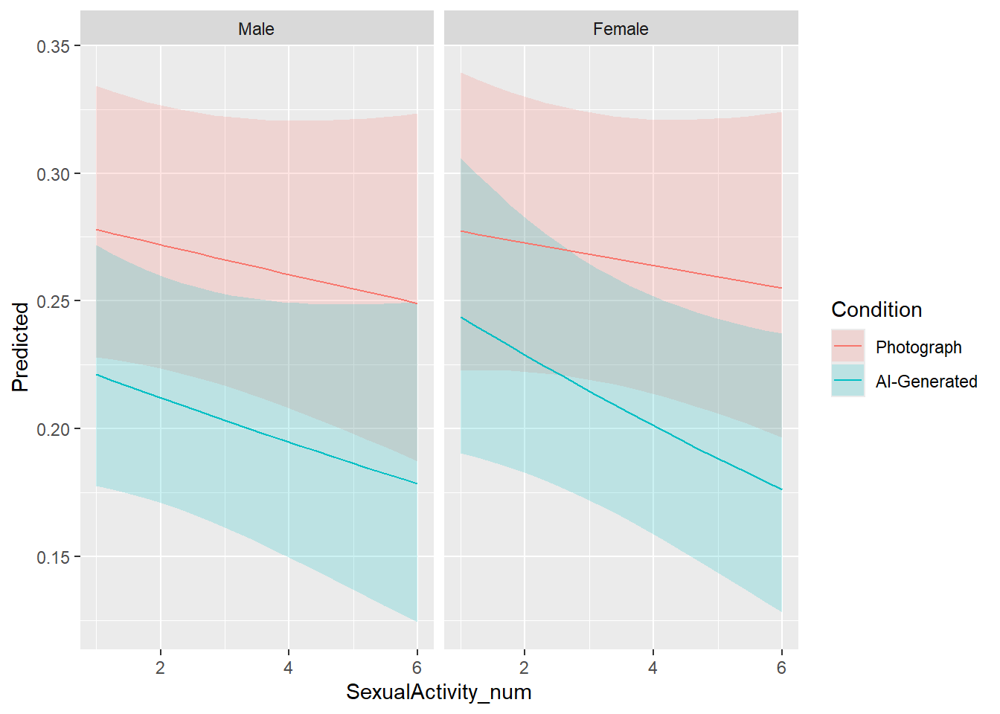
Note. Model adding Relevance and Condition as random slopes for each stimuli converged.
m <- glmmTMB::glmmTMB(Enticement ~ Sex / Relevance / Condition + (Relevance | Participant) + ((Relevance/Condition)|Item),
data=filter(df, ConditionBelief == "True"),
family=glmmTMB::ordbeta(),
control = glmmTMB::glmmTMBControl(parallel = 8))Warning in finalizeTMB(TMBStruc, obj, fit, h, data.tmb.old): Model convergence problem; non-positive-definite Hessian matrix. See vignette('troubleshooting')results_table(m)| Parameter | Coefficient | SE | 95% CI | z | p |
|---|---|---|---|---|---|
| (Intercept) | 0.89 | 0.09 | (0.71, 1.07) | 9.55 | < .001 |
| Sex (Female) | -0.94 | 0.14 | (-1.21, -0.68) | -6.97 | < .001 |
| Sex (Male) × RelevanceIrrelevant | -2.23 | 0.12 | (-2.47, -1.99) | -18.21 | < .001 |
| Sex (Female) × RelevanceIrrelevant | 0.05 | 0.13 | (-0.21, 0.32) | 0.39 | 0.699 |
| Sex (Male) × RelevanceNon-erotic | -2.48 | 0.14 | (-2.74, -2.21) | -18.36 | < .001 |
| Sex (Female) × RelevanceNon-erotic | -1.20 | 0.15 | (-1.48, -0.91) | -8.18 | < .001 |
| Sex (Male) × RelevanceRelevant × ConditionAI-Generated | -0.40 | 0.04 | (-0.49, -0.31) | -8.99 | < .001 |
| Sex (Female) × RelevanceRelevant × ConditionAI-Generated | -0.30 | 0.05 | (-0.40, -0.20) | -5.79 | < .001 |
| Sex (Male) × RelevanceIrrelevant × ConditionAI-Generated | -0.13 | 0.04 | (-0.20, -0.05) | -3.37 | < .001 |
| Sex (Female) × RelevanceIrrelevant × ConditionAI-Generated | -0.28 | 0.05 | (-0.36, -0.19) | -6.07 | < .001 |
| Sex (Male) × RelevanceNon-erotic × ConditionAI-Generated | -0.23 | 0.05 | (-0.32, -0.13) | -4.77 | < .001 |
| Sex (Female) × RelevanceNon-erotic × ConditionAI-Generated | -0.12 | 0.07 | (-0.25, 0.01) | -1.74 | 0.081 |
moderator_believed <- data.frame()
for(m in c("BAIT_Visual", "BAIT_Text", "AI_Knowledge",
"GAAIS_Positive", "GAAIS_Negative",
"Porn", "PornFrequency", "SexualActivity_num",
"Feedback_CouldDiscriminate", "Feedback_CouldNotDiscriminate",
"Feedback_AIMoreArousing", "Feedback_AILessArousing",
"Feedback_LabelsIncorrect", "Feedback_LabelsReversed")) {
moderator_believed <- rbind(moderator_believed,
test_moderator(filter(df, ConditionBelief == "True"), "Enticement", m))
}
display(filter(moderator_believed, p < .1))| Parameter | Coefficient | 95% CI | z | p | Moderator | Outcome |
|---|---|---|---|---|---|---|
| Sex [Male] × ConditionAI-Generated × BAIT Text | 0.30 | [-0.02, 0.63] | 1.84 | 0.065 | BAIT_Text | Enticement |
| Sex [Female] × ConditionAI-Generated × Porn | -0.13 | [-0.27, 0.01] | -1.81 | 0.070 | Porn | Enticement |
| Sex [Female] × ConditionAI-Generated × SexualActivity num | -0.07 | [-0.14, 0.01] | -1.80 | 0.072 | SexualActivity_num | Enticement |
| Sex [Male] × ConditionAI-Generated × Feedback AILessArousingTrue | -0.38 | [-0.58, -0.18] | -3.73 | < .001 | Feedback_AILessArousing | Enticement |
valence_desc <- plot_descriptive(df, "Valence")
valence_desc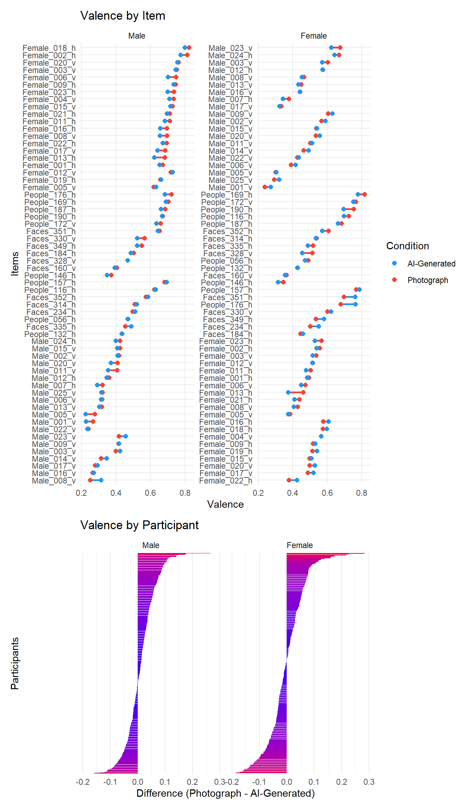
This model investigates the effects of Sex, Relevance, and Condition on Valence, accounting for random variability due to participants and items (i.e., random effects).
Females rate relevant images significantly lower in valence than males on average. Males rate irrelevant and non-erotic images significantly lower in valence compared to relevant images. Females rate both irrelevant and non-erotic images higher in valence compared to relevant ones, but this effect is only significant for non-erotic stimuli. Males rate relevant images significantly lower in valence when labeled as AI-generated compared to when labeled as photographs.
Females rate relevant (photograph) images significantly lower in valence compared to males. Males rate irrelevant (photograph) and non-erotic (photograph) images significantly lower in valence compared to relevant images. Females rate non-erotic (photograph) images higher in valence compared to relevant ones. Males rate relevant AI-Generated images significantly lower in valence compared to photographs.
Lastly, we can see that for males, valence ratings are on average significantly lower for AI-Generated images compared to Photograph images. For females, there is no significant effect.
Note. Model adding Relevance and Condition as random slopes for each stimuli converged.
m_valence <- glmmTMB::glmmTMB(Valence ~ Sex / Relevance / Condition +
(Relevance | Participant) + (1|Item),
data=df, family=glmmTMB::ordbeta(),
control = glmmTMB::glmmTMBControl(parallel = 8))
results_table(m_valence)| Parameter | Coefficient | SE | 95% CI | z | p |
|---|---|---|---|---|---|
| (Intercept) | 0.91 | 0.09 | (0.74, 1.07) | 10.65 | < .001 |
| Sex (Female) | -1.02 | 0.12 | (-1.26, -0.77) | -8.19 | < .001 |
| Sex (Male) × RelevanceIrrelevant | -1.68 | 0.12 | (-1.92, -1.44) | -13.71 | < .001 |
| Sex (Female) × RelevanceIrrelevant | 0.06 | 0.13 | (-0.20, 0.31) | 0.43 | 0.671 |
| Sex (Male) × RelevanceNon-erotic | -0.68 | 0.12 | (-0.92, -0.45) | -5.82 | < .001 |
| Sex (Female) × RelevanceNon-erotic | 0.49 | 0.12 | (0.25, 0.73) | 3.97 | < .001 |
| Sex (Male) × RelevanceRelevant × ConditionAI-Generated | -0.10 | 0.02 | (-0.13, -0.06) | -5.60 | < .001 |
| Sex (Female) × RelevanceRelevant × ConditionAI-Generated | 0.02 | 0.02 | (-0.02, 0.06) | 0.87 | 0.383 |
| Sex (Male) × RelevanceIrrelevant × ConditionAI-Generated | -0.03 | 0.02 | (-0.06, 6.13e-03) | -1.61 | 0.108 |
| Sex (Female) × RelevanceIrrelevant × ConditionAI-Generated | -5.90e-03 | 0.02 | (-0.05, 0.04) | -0.26 | 0.793 |
| Sex (Male) × RelevanceNon-erotic × ConditionAI-Generated | -0.04 | 0.02 | (-0.07, -6.72e-03) | -2.36 | 0.018 |
| Sex (Female) × RelevanceNon-erotic × ConditionAI-Generated | -0.02 | 0.02 | (-0.07, 0.03) | -0.86 | 0.389 |
marginaleffects::avg_slopes(m_valence, variables="Condition", by="Sex", re.form=NA) |>
results_table()| Comparison | Sex | Coefficient | z | p | 95% CI |
|---|---|---|---|---|---|
| AI-Generated - Photograph | Male | -0.01 | -5.38 | < .001 | [-0.02, -0.01] |
| AI-Generated - Photograph | Female | -4.69e-04 | -0.14 | 0.885 | [-0.01, 0.01] |
Examining the effect of sample type as a predictor, males consistently rate relevant AI-generated images significantly lower in valence compared to relevant photographs. Additionally, among non-incentivized students, this pattern persists for males, while females rate relevant AI-generated images significantly higher in valence compared to relevant photographs
Note. Model adding Relevance and Condition as random slopes for each stimuli converged.
m <- glmmTMB::glmmTMB(Valence ~ Sample / Sex / Relevance / Condition + (Relevance | Participant) + ((Relevance/Condition)|Item),
data=df,
family=glmmTMB::ordbeta(),
control = glmmTMB::glmmTMBControl(parallel = 8))Warning in finalizeTMB(TMBStruc, obj, fit, h, data.tmb.old): Model convergence problem; non-positive-definite Hessian matrix. See vignette('troubleshooting')Warning in finalizeTMB(TMBStruc, obj, fit, h, data.tmb.old): Model convergence problem; function evaluation limit reached without convergence (9). See vignette('troubleshooting'), help('diagnose')results_table(m, filter="Condition")| Parameter | Coefficient | SE | 95% CI | z | p |
|---|---|---|---|---|---|
| Sample (General Population) × SexMale × RelevanceRelevant × ConditionAI-Generated | -0.12 | 0.02 | (-0.16, -0.08) | -5.52 | < .001 |
| Sample (Students (Incentivized)) × SexMale × RelevanceRelevant × ConditionAI-Generated | -0.02 | 0.06 | (-0.13, 0.10) | -0.27 | 0.784 |
| Sample (Students (Non-incentivized)) × SexMale × RelevanceRelevant × ConditionAI-Generated | -9.87e-03 | 0.06 | (-0.12, 0.10) | -0.18 | 0.859 |
| Sample (General Population) × SexFemale × RelevanceRelevant × ConditionAI-Generated | 0.02 | 0.04 | (-0.07, 0.11) | 0.48 | 0.632 |
| Sample (Students (Incentivized)) × SexFemale × RelevanceRelevant × ConditionAI-Generated | -0.05 | 0.04 | (-0.12, 0.03) | -1.27 | 0.203 |
| Sample (Students (Non-incentivized)) × SexFemale × RelevanceRelevant × ConditionAI-Generated | 0.08 | 0.04 | (4.36e-03, 0.16) | 2.07 | 0.039 |
| Sample (General Population) × SexMale × RelevanceIrrelevant × ConditionAI-Generated | -0.03 | 0.02 | (-0.07, 0.01) | -1.27 | 0.204 |
| Sample (Students (Incentivized)) × SexMale × RelevanceIrrelevant × ConditionAI-Generated | -0.15 | 0.07 | (-0.28, -0.02) | -2.25 | 0.025 |
| Sample (Students (Non-incentivized)) × SexMale × RelevanceIrrelevant × ConditionAI-Generated | 0.06 | 0.06 | (-0.06, 0.17) | 0.96 | 0.335 |
| Sample (General Population) × SexFemale × RelevanceIrrelevant × ConditionAI-Generated | 7.95e-03 | 0.04 | (-0.08, 0.09) | 0.18 | 0.856 |
| Sample (Students (Incentivized)) × SexFemale × RelevanceIrrelevant × ConditionAI-Generated | -0.02 | 0.04 | (-0.09, 0.05) | -0.54 | 0.590 |
| Sample (Students (Non-incentivized)) × SexFemale × RelevanceIrrelevant × ConditionAI-Generated | -2.71e-03 | 0.04 | (-0.08, 0.08) | -0.07 | 0.946 |
| Sample (General Population) × SexMale × RelevanceNon-erotic × ConditionAI-Generated | -0.03 | 0.02 | (-0.07, 5.62e-03) | -1.65 | 0.099 |
| Sample (Students (Incentivized)) × SexMale × RelevanceNon-erotic × ConditionAI-Generated | -0.03 | 0.06 | (-0.14, 0.09) | -0.47 | 0.638 |
| Sample (Students (Non-incentivized)) × SexMale × RelevanceNon-erotic × ConditionAI-Generated | -0.13 | 0.05 | (-0.24, -0.02) | -2.41 | 0.016 |
| Sample (General Population) × SexFemale × RelevanceNon-erotic × ConditionAI-Generated | -0.05 | 0.04 | (-0.13, 0.04) | -1.10 | 0.271 |
| Sample (Students (Incentivized)) × SexFemale × RelevanceNon-erotic × ConditionAI-Generated | 6.70e-03 | 0.04 | (-0.07, 0.08) | 0.18 | 0.856 |
| Sample (Students (Non-incentivized)) × SexFemale × RelevanceNon-erotic × ConditionAI-Generated | -0.03 | 0.04 | (-0.11, 0.05) | -0.68 | 0.493 |
When examining the use of mobile devices as a predictor, men consistently rated the valence lower for relevant AI-generated images compared to photographs, regardless of whether they used a mobile or a standard computer. However, the effect was more pronounced among those using mobile devices.
m <- glmmTMB::glmmTMB(Valence ~ Mobile / Sex / Relevance / Condition + (Relevance | Participant) + ((Relevance/Condition)|Item),
data=df,
family=glmmTMB::ordbeta(),
control = glmmTMB::glmmTMBControl(parallel = 8))Warning in finalizeTMB(TMBStruc, obj, fit, h, data.tmb.old): Model convergence problem; non-positive-definite Hessian matrix. See vignette('troubleshooting')results_table(m, filter="Condition")| Parameter | Coefficient | SE | 95% CI | z | p |
|---|---|---|---|---|---|
| Mobile (False) × SexMale × RelevanceRelevant × ConditionAI-Generated | -0.08 | 0.02 | (-0.12, -0.03) | -3.24 | 0.001 |
| Mobile (True) × SexMale × RelevanceRelevant × ConditionAI-Generated | -0.14 | 0.03 | (-0.20, -0.08) | -4.58 | < .001 |
| Mobile (False) × SexFemale × RelevanceRelevant × ConditionAI-Generated | 0.01 | 0.03 | (-0.04, 0.07) | 0.53 | 0.595 |
| Mobile (True) × SexFemale × RelevanceRelevant × ConditionAI-Generated | 0.02 | 0.05 | (-0.08, 0.11) | 0.37 | 0.708 |
| Mobile (False) × SexMale × RelevanceIrrelevant × ConditionAI-Generated | -0.04 | 0.02 | (-0.09, 2.95e-03) | -1.84 | 0.066 |
| Mobile (True) × SexMale × RelevanceIrrelevant × ConditionAI-Generated | -6.41e-04 | 0.03 | (-0.06, 0.06) | -0.02 | 0.983 |
| Mobile (False) × SexFemale × RelevanceIrrelevant × ConditionAI-Generated | -0.01 | 0.03 | (-0.07, 0.04) | -0.40 | 0.686 |
| Mobile (True) × SexFemale × RelevanceIrrelevant × ConditionAI-Generated | 8.53e-03 | 0.05 | (-0.08, 0.10) | 0.18 | 0.857 |
| Mobile (False) × SexMale × RelevanceNon-erotic × ConditionAI-Generated | -0.03 | 0.02 | (-0.07, 8.94e-03) | -1.53 | 0.126 |
| Mobile (True) × SexMale × RelevanceNon-erotic × ConditionAI-Generated | -0.05 | 0.03 | (-0.11, 1.47e-03) | -1.91 | 0.057 |
| Mobile (False) × SexFemale × RelevanceNon-erotic × ConditionAI-Generated | -0.01 | 0.03 | (-0.07, 0.04) | -0.51 | 0.609 |
| Mobile (True) × SexFemale × RelevanceNon-erotic × ConditionAI-Generated | -0.04 | 0.05 | (-0.13, 0.05) | -0.84 | 0.400 |
Here we look at whether the relationship between sex, condition and relevance and valence is moderated by AI-attitudes, porn frequency and usage, and sexual activity. Females who have more positive attitudes towards AI rated AI-generated images significantly higher in valence compared to images labelled as photographs.
Looking at feedback as a moderator we can see that ales who reported that they could not discriminate between AI-generated and photograph images, rated AI-generated images significantly higher in valence compared to images labelled as photographs.
for(m in c("BAIT_Visual", "BAIT_Text", "AI_Knowledge",
"GAAIS_Positive", "GAAIS_Negative",
"Porn", "PornFrequency", "SexualActivity_num")) {
moderator_results <- rbind(moderator_results,
test_moderator(df, "Valence", m))
}
display(filter(moderator_results, Outcome == "Valence"))| Parameter | Coefficient | 95% CI | z | p | Moderator | Outcome |
|---|---|---|---|---|---|---|
| Sex [Male] × ConditionAI-Generated × BAIT Visual | 0.08 | [-0.15, 0.32] | 0.72 | 0.473 | BAIT_Visual | Valence |
| Sex [Female] × ConditionAI-Generated × BAIT Visual | 0.30 | [-0.06, 0.65] | 1.64 | 0.100 | BAIT_Visual | Valence |
| Sex [Male] × ConditionAI-Generated × BAIT Text | 0.10 | [-0.06, 0.26] | 1.24 | 0.214 | BAIT_Text | Valence |
| Sex [Female] × ConditionAI-Generated × BAIT Text | 0.17 | [-0.07, 0.42] | 1.42 | 0.157 | BAIT_Text | Valence |
| Sex [Male] × ConditionAI-Generated × AI Knowledge | 5.74e-03 | [-0.03, 0.04] | 0.33 | 0.742 | AI_Knowledge | Valence |
| Sex [Female] × ConditionAI-Generated × AI Knowledge | 0.03 | [-0.01, 0.07] | 1.55 | 0.122 | AI_Knowledge | Valence |
| Sex [Male] × ConditionAI-Generated × GAAIS Positive | 0.04 | [-0.15, 0.22] | 0.41 | 0.680 | GAAIS_Positive | Valence |
| Sex [Female] × ConditionAI-Generated × GAAIS Positive | 0.35 | [ 0.09, 0.62] | 2.59 | 0.010 | GAAIS_Positive | Valence |
| Sex [Male] × ConditionAI-Generated × GAAIS Negative | -2.35e-03 | [-0.17, 0.16] | -0.03 | 0.978 | GAAIS_Negative | Valence |
| Sex [Female] × ConditionAI-Generated × GAAIS Negative | 0.18 | [-0.07, 0.43] | 1.38 | 0.166 | GAAIS_Negative | Valence |
| Sex [Male] × ConditionAI-Generated × Porn | -0.04 | [-0.09, 0.01] | -1.56 | 0.118 | Porn | Valence |
| Sex [Female] × ConditionAI-Generated × Porn | -0.06 | [-0.13, 0.01] | -1.76 | 0.079 | Porn | Valence |
| Sex [Male] × ConditionAI-Generated × PornFrequency | -0.01 | [-0.04, 0.01] | -0.88 | 0.377 | PornFrequency | Valence |
| Sex [Female] × ConditionAI-Generated × PornFrequency | -0.02 | [-0.06, 0.02] | -1.04 | 0.300 | PornFrequency | Valence |
| Sex [Male] × ConditionAI-Generated × SexualActivity num | -0.02 | [-0.06, 0.01] | -1.30 | 0.193 | SexualActivity_num | Valence |
| Sex [Female] × ConditionAI-Generated × SexualActivity num | -9.41e-03 | [-0.05, 0.03] | -0.49 | 0.621 | SexualActivity_num | Valence |
for(m in c("Feedback_CouldDiscriminate", "Feedback_CouldNotDiscriminate",
"Feedback_AIMoreArousing", "Feedback_AILessArousing",
"Feedback_LabelsIncorrect", "Feedback_LabelsReversed")) {
feedback_results <- rbind(feedback_results,
test_moderator(df, "Valence", m))
}
display(filter(feedback_results, Outcome == "Valence"))| Parameter | Coefficient | 95% CI | z | p | Moderator | Outcome |
|---|---|---|---|---|---|---|
| Sex [Male] × ConditionAI-Generated × Feedback CouldDiscriminateTrue | -0.14 | [-0.30, 0.01] | -1.87 | 0.062 | Feedback_CouldDiscriminate | Valence |
| Sex [Female] × ConditionAI-Generated × Feedback CouldDiscriminateTrue | -0.05 | [-0.26, 0.15] | -0.50 | 0.618 | Feedback_CouldDiscriminate | Valence |
| Sex [Male] × ConditionAI-Generated × Feedback CouldNotDiscriminateTrue | 0.10 | [ 0.02, 0.18] | 2.49 | 0.013 | Feedback_CouldNotDiscriminate | Valence |
| Sex [Female] × ConditionAI-Generated × Feedback CouldNotDiscriminateTrue | 0.05 | [-0.05, 0.16] | 1.03 | 0.301 | Feedback_CouldNotDiscriminate | Valence |
| Sex [Male] × ConditionAI-Generated × Feedback AIMoreArousingTrue | 0.04 | [-0.09, 0.18] | 0.63 | 0.529 | Feedback_AIMoreArousing | Valence |
| Sex [Female] × ConditionAI-Generated × Feedback AIMoreArousingTrue | 0.11 | [-0.03, 0.26] | 1.57 | 0.116 | Feedback_AIMoreArousing | Valence |
| Sex [Male] × ConditionAI-Generated × Feedback AILessArousingTrue | -0.11 | [-0.24, 0.01] | -1.82 | 0.069 | Feedback_AILessArousing | Valence |
| Sex [Female] × ConditionAI-Generated × Feedback AILessArousingTrue | 0.08 | [-0.10, 0.25] | 0.87 | 0.386 | Feedback_AILessArousing | Valence |
| Sex [Male] × ConditionAI-Generated × Feedback LabelsIncorrectTrue | -0.05 | [-0.13, 0.02] | -1.36 | 0.175 | Feedback_LabelsIncorrect | Valence |
| Sex [Female] × ConditionAI-Generated × Feedback LabelsIncorrectTrue | -0.08 | [-0.19, 0.03] | -1.36 | 0.173 | Feedback_LabelsIncorrect | Valence |
| Sex [Male] × ConditionAI-Generated × Feedback LabelsReversedTrue | 0.02 | [-0.16, 0.19] | 0.20 | 0.843 | Feedback_LabelsReversed | Valence |
| Sex [Female] × ConditionAI-Generated × Feedback LabelsReversedTrue | 0.12 | [-0.07, 0.31] | 1.24 | 0.214 | Feedback_LabelsReversed | Valence |
m <- glmmTMB::glmmTMB(Valence ~ Sex / Relevance / Condition + (Relevance | Participant) + ((Relevance/Condition)|Item),
data=filter(df, ConditionBelief == "True"),
family=glmmTMB::ordbeta(),
control = glmmTMB::glmmTMBControl(parallel = 8))Warning in finalizeTMB(TMBStruc, obj, fit, h, data.tmb.old): Model convergence problem; non-positive-definite Hessian matrix. See vignette('troubleshooting')results_table(m)| Parameter | Coefficient | SE | 95% CI | z | p |
|---|---|---|---|---|---|
| (Intercept) | 0.96 | 0.09 | (0.79, 1.13) | 11.02 | < .001 |
| Sex (Female) | -0.94 | 0.13 | (-1.19, -0.70) | -7.45 | < .001 |
| Sex (Male) × RelevanceIrrelevant | -1.66 | 0.11 | (-1.87, -1.44) | -15.10 | < .001 |
| Sex (Female) × RelevanceIrrelevant | 0.03 | 0.12 | (-0.21, 0.26) | 0.22 | 0.828 |
| Sex (Male) × RelevanceNon-erotic | -0.72 | 0.14 | (-0.99, -0.45) | -5.22 | < .001 |
| Sex (Female) × RelevanceNon-erotic | 0.42 | 0.14 | (0.14, 0.70) | 2.94 | 0.003 |
| Sex (Male) × RelevanceRelevant × ConditionAI-Generated | -0.45 | 0.05 | (-0.54, -0.37) | -9.99 | < .001 |
| Sex (Female) × RelevanceRelevant × ConditionAI-Generated | -0.33 | 0.05 | (-0.43, -0.23) | -6.53 | < .001 |
| Sex (Male) × RelevanceIrrelevant × ConditionAI-Generated | -0.21 | 0.03 | (-0.27, -0.14) | -6.01 | < .001 |
| Sex (Female) × RelevanceIrrelevant × ConditionAI-Generated | -0.23 | 0.04 | (-0.32, -0.15) | -5.44 | < .001 |
| Sex (Male) × RelevanceNon-erotic × ConditionAI-Generated | -0.17 | 0.04 | (-0.25, -0.10) | -4.70 | < .001 |
| Sex (Female) × RelevanceNon-erotic × ConditionAI-Generated | -0.23 | 0.06 | (-0.34, -0.12) | -4.07 | < .001 |
moderator_believed <- data.frame()
for(m in c("BAIT_Visual", "BAIT_Text", "AI_Knowledge",
"GAAIS_Positive", "GAAIS_Negative",
"Porn", "PornFrequency", "SexualActivity_num",
"Feedback_CouldDiscriminate", "Feedback_CouldNotDiscriminate",
"Feedback_AIMoreArousing", "Feedback_AILessArousing",
"Feedback_LabelsIncorrect", "Feedback_LabelsReversed")) {
moderator_believed <- rbind(moderator_believed,
test_moderator(filter(df, ConditionBelief == "True"), "Valence", m))
}
display(filter(moderator_believed, p < .1))| Parameter | Coefficient | 95% CI | z | p | Moderator | Outcome |
|---|---|---|---|---|---|---|
| Sex [Male] × ConditionAI-Generated × BAIT Text | 0.37 | [ 0.02, 0.72] | 2.05 | 0.040 | BAIT_Text | Valence |
| Sex [Male] × ConditionAI-Generated × SexualActivity num | -0.07 | [-0.15, 0.01] | -1.77 | 0.076 | SexualActivity_num | Valence |
| Sex [Male] × ConditionAI-Generated × Feedback CouldDiscriminateTrue | -0.29 | [-0.61, 0.02] | -1.83 | 0.068 | Feedback_CouldDiscriminate | Valence |
| Sex [Female] × ConditionAI-Generated × Feedback CouldNotDiscriminateTrue | 0.22 | [ 0.01, 0.42] | 2.02 | 0.043 | Feedback_CouldNotDiscriminate | Valence |
| Sex [Male] × ConditionAI-Generated × Feedback AILessArousingTrue | -0.27 | [-0.49, -0.04] | -2.32 | 0.021 | Feedback_AILessArousing | Valence |
Here we combined the data for arousal, valence and enticing into an emotionality factor.
pca <- principal_components(df[c("Valence", "Arousal", "Enticement")], n = 2)
pca# Loadings from Principal Component Analysis (no rotation)
Variable | PC1 | PC2 | Complexity
--------------------------------------
Valence | 0.79 | 0.61 | 1.88
Arousal | 0.87 | -0.37 | 1.34
Enticement | 0.91 | -0.18 | 1.08
The 2 principal components accounted for 91.45% of the total variance of the original data (PC1 = 73.65%, PC2 = 17.80%).df$Emotionality <- normalize(predict(pca)$PC1)
emotionality <- df |>
mutate(Emotionality_Extreme = ifelse(Emotionality %in% c(0, 1), "Extreme", "Not extreme")) |>
ggplot(aes(x=Emotionality, fill=Relevance)) +
geom_histogram(aes(color=Emotionality_Extreme), position = "identity", bins=80) +
facet_grid(Relevance~Sex, scales="free_y") +
scale_color_manual(values=c("red", "white"), guide="none") +
scale_fill_manual(values=c("Relevant"="#E91E63", "Irrelevant"="#FF9800", "Non-erotic"="#03A9F4"), guide="none") +
scale_y_sqrt(expand = c(0, 0)) +
labs(title = "Emotionality") +
theme_abyss() +
theme(plot.title = element_text(hjust = 0.5, face="bold"))
emotionality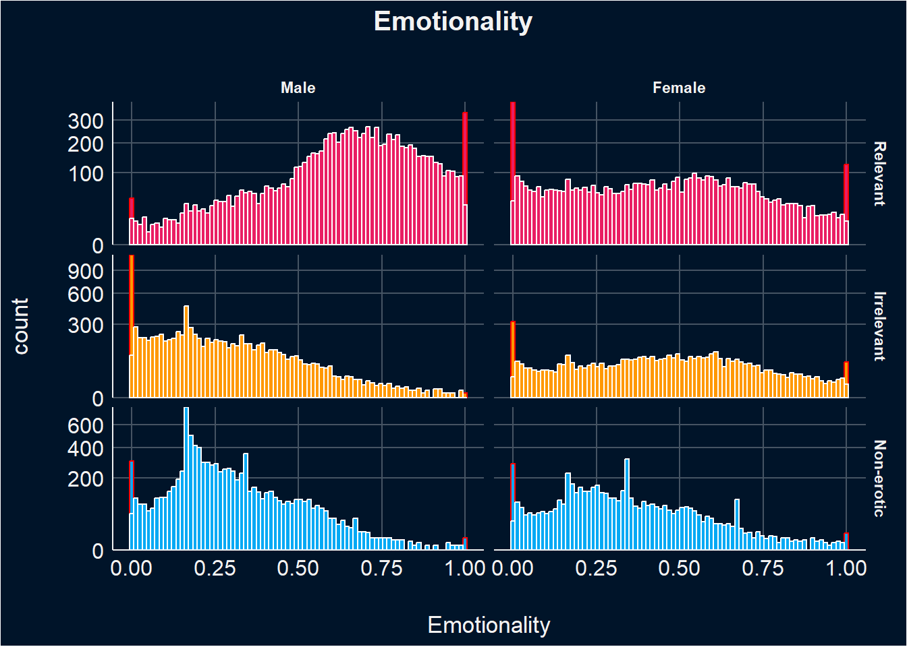
emotionality_desc <- plot_descriptive(df, "Emotionality")
emotionality_desc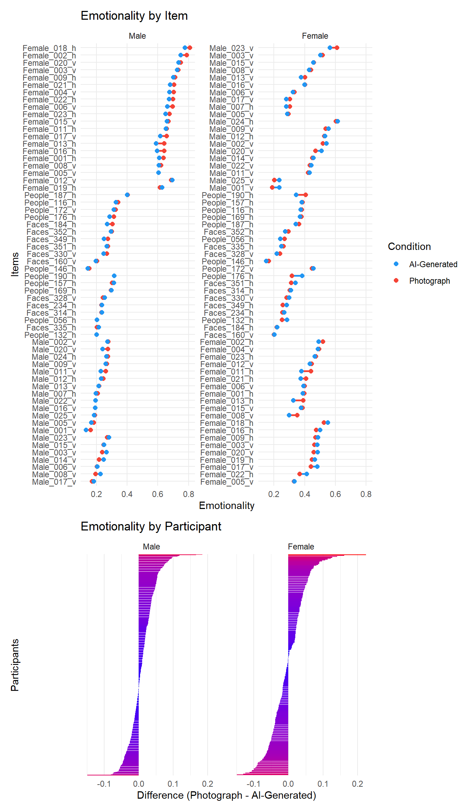
This model looks at the effect of sex, relevance and condition on emotionality, accounting for random variability due to participants and items (i.e., random effects).
These findings suggest that females consistently rate relevant (photograph) images lower in emotionality compared to males. Additionally, males specifically rate irrelevant (photograph) images lower in emotionality, and both genders rate non-erotic (photgraph) images lower in emotionality compared to relevant images. Furthermore, males rate AI-generated relevant images lower in emotionality compared to those labelled as photographs.
For males, emotionality ratings are on average significantly lower for AI-Generated images compared to Photograph images. This indicates that males generally rate AI-Generated images lower in emotionality compared to photographs. For females, there is no significant difference between the mean ratings of AI-Generated and Photograph images in terms of emotionality. This suggests that females do not show a significant preference or difference in emotionality ratings between AI-Generated and Photograph images.
m <- glmmTMB::glmmTMB(Emotionality ~ Sex / Relevance / Condition + (Relevance | Participant) + (1|Item),
data=df, family=glmmTMB::ordbeta(),
control = glmmTMB::glmmTMBControl(parallel = 8))
results_table(m)| Parameter | Coefficient | SE | 95% CI | z | p |
|---|---|---|---|---|---|
| (Intercept) | 0.81 | 0.07 | (0.67, 0.96) | 10.91 | < .001 |
| Sex (Female) | -1.21 | 0.11 | (-1.43, -1.00) | -11.04 | < .001 |
| Sex (Male) × RelevanceIrrelevant | -2.26 | 0.11 | (-2.47, -2.05) | -21.03 | < .001 |
| Sex (Female) × RelevanceIrrelevant | 0.03 | 0.12 | (-0.20, 0.26) | 0.23 | 0.820 |
| Sex (Male) × RelevanceNon-erotic | -1.80 | 0.10 | (-1.99, -1.60) | -17.91 | < .001 |
| Sex (Female) × RelevanceNon-erotic | -0.48 | 0.11 | (-0.68, -0.27) | -4.48 | < .001 |
| Sex (Male) × RelevanceRelevant × ConditionAI-Generated | -0.10 | 0.01 | (-0.13, -0.07) | -6.72 | < .001 |
| Sex (Female) × RelevanceRelevant × ConditionAI-Generated | 0.02 | 0.02 | (-0.02, 0.06) | 0.94 | 0.348 |
| Sex (Male) × RelevanceIrrelevant × ConditionAI-Generated | -0.02 | 0.02 | (-0.05, 0.01) | -1.07 | 0.286 |
| Sex (Female) × RelevanceIrrelevant × ConditionAI-Generated | 7.95e-05 | 0.02 | (-0.04, 0.04) | 3.97e-03 | 0.997 |
| Sex (Male) × RelevanceNon-erotic × ConditionAI-Generated | -0.03 | 0.01 | (-0.06, 5.16e-04) | -1.93 | 0.054 |
| Sex (Female) × RelevanceNon-erotic × ConditionAI-Generated | 5.20e-03 | 0.02 | (-0.03, 0.04) | 0.26 | 0.795 |
marginaleffects::avg_slopes(m, variables="Condition", by="Sex", re.form=NA, backend ="emmeans") |>
results_table()Warning: These arguments are not known to be supported for models of class `glmmTMB`: backend. These arguments are known to be valid: re.form, allow.new.levels, zitype. All arguments are still passed to the model-specific prediction function, but users are encouraged to check if the argument is
indeed supported by their modeling package. Please file a request on Github if you believe that an unknown argument should be added to the `marginaleffects` white list of known arguments, in order to avoid raising this warning: https://github.com/vincentarelbundock/marginaleffects/issues
Warning: These arguments are not known to be supported for models of class `glmmTMB`: backend. These arguments are known to be valid: re.form, allow.new.levels, zitype. All arguments are still passed to the model-specific prediction function, but users are encouraged to check if the argument is
indeed supported by their modeling package. Please file a request on Github if you believe that an unknown argument should be added to the `marginaleffects` white list of known arguments, in order to avoid raising this warning: https://github.com/vincentarelbundock/marginaleffects/issues| Comparison | Sex | Coefficient | z | p | 95% CI |
|---|---|---|---|---|---|
| AI-Generated - Photograph | Male | -9.98e-03 | -5.92 | < .001 | [-0.01, -0.01] |
| AI-Generated - Photograph | Female | 1.87e-03 | 0.70 | 0.482 | [ 0.00, 0.01] |
This model investigates the influence of sample type (General Population, Incentivized Students, Non-incentivized Students), Sex, Relevance, and Condition (AI-Generated vs. Photograph) on emotionality ratings. Males from the General Population consistently rated AI-Generated images lower in emotionality compared to photographs across relevant conditions. Females from the Non-incentivized Students group showed a significant preference for AI-Generated images in terms of emotionality compared to photographs.
These findings suggest that the perception of emotionality in AI-Generated images varies significantly based on sample type (general population vs. students) and the relevance of the images, particularly for males and non-incentivized female students.
m <- glmmTMB::glmmTMB(Emotionality ~ Sample / Sex / Relevance / Condition + (Relevance | Participant) + ((Relevance/Condition)|Item),
data=df,
family=glmmTMB::ordbeta(),
control = glmmTMB::glmmTMBControl(parallel = 8))Warning in finalizeTMB(TMBStruc, obj, fit, h, data.tmb.old): Model convergence problem; non-positive-definite Hessian matrix. See vignette('troubleshooting')Warning in finalizeTMB(TMBStruc, obj, fit, h, data.tmb.old): Model convergence problem; singular convergence (7). See vignette('troubleshooting'), help('diagnose')results_table(m, filter="Condition")| Parameter | Coefficient | SE | 95% CI | z | p |
|---|---|---|---|---|---|
| Sample (General Population) × SexMale × RelevanceRelevant × ConditionAI-Generated | -0.12 | 0.02 | (-0.15, -0.08) | -6.35 | < .001 |
| Sample (Students (Incentivized)) × SexMale × RelevanceRelevant × ConditionAI-Generated | -0.09 | 0.05 | (-0.19, 7.93e-03) | -1.80 | 0.071 |
| Sample (Students (Non-incentivized)) × SexMale × RelevanceRelevant × ConditionAI-Generated | -0.02 | 0.05 | (-0.11, 0.07) | -0.51 | 0.610 |
| Sample (General Population) × SexFemale × RelevanceRelevant × ConditionAI-Generated | -7.06e-04 | 0.04 | (-0.08, 0.08) | -0.02 | 0.985 |
| Sample (Students (Incentivized)) × SexFemale × RelevanceRelevant × ConditionAI-Generated | -0.04 | 0.03 | (-0.11, 0.03) | -1.16 | 0.246 |
| Sample (Students (Non-incentivized)) × SexFemale × RelevanceRelevant × ConditionAI-Generated | 0.09 | 0.04 | (0.02, 0.16) | 2.62 | 0.009 |
| Sample (General Population) × SexMale × RelevanceIrrelevant × ConditionAI-Generated | -0.02 | 0.02 | (-0.05, 0.02) | -0.97 | 0.334 |
| Sample (Students (Incentivized)) × SexMale × RelevanceIrrelevant × ConditionAI-Generated | -0.11 | 0.06 | (-0.23, 0.01) | -1.75 | 0.080 |
| Sample (Students (Non-incentivized)) × SexMale × RelevanceIrrelevant × ConditionAI-Generated | 0.04 | 0.05 | (-0.07, 0.15) | 0.74 | 0.457 |
| Sample (General Population) × SexFemale × RelevanceIrrelevant × ConditionAI-Generated | 0.02 | 0.04 | (-0.05, 0.10) | 0.61 | 0.540 |
| Sample (Students (Incentivized)) × SexFemale × RelevanceIrrelevant × ConditionAI-Generated | -0.02 | 0.03 | (-0.09, 0.04) | -0.73 | 0.464 |
| Sample (Students (Non-incentivized)) × SexFemale × RelevanceIrrelevant × ConditionAI-Generated | 9.76e-03 | 0.03 | (-0.06, 0.08) | 0.28 | 0.779 |
| Sample (General Population) × SexMale × RelevanceNon-erotic × ConditionAI-Generated | -0.03 | 0.02 | (-0.06, 7.29e-03) | -1.52 | 0.129 |
| Sample (Students (Incentivized)) × SexMale × RelevanceNon-erotic × ConditionAI-Generated | 2.80e-03 | 0.05 | (-0.10, 0.10) | 0.05 | 0.957 |
| Sample (Students (Non-incentivized)) × SexMale × RelevanceNon-erotic × ConditionAI-Generated | -0.08 | 0.04 | (-0.17, 3.56e-03) | -1.88 | 0.060 |
| Sample (General Population) × SexFemale × RelevanceNon-erotic × ConditionAI-Generated | 8.97e-04 | 0.04 | (-0.07, 0.07) | 0.02 | 0.981 |
| Sample (Students (Incentivized)) × SexFemale × RelevanceNon-erotic × ConditionAI-Generated | 7.45e-03 | 0.03 | (-0.06, 0.07) | 0.22 | 0.823 |
| Sample (Students (Non-incentivized)) × SexFemale × RelevanceNon-erotic × ConditionAI-Generated | 5.43e-03 | 0.03 | (-0.06, 0.07) | 0.16 | 0.869 |
This analysis explores the influence of using a mobile device to complete the experiment on emotionality ratings, focusing on differences between males and females across relevant and irrelevant conditions of AI-Generated and photograph images.
Males consistently rate emotionality significantly lower for relevant AI-Generated images compared to photograph images, irrespective of whether they use a mobile device or not. They also rate emotionality significantly lower for irrelevant AI-Generated images compared to photograph images when not using a mobile device. For females, there are no significant differences in how they rate emotionality for AI-Generated images based on whether they use a mobile device or not, regardless of relevance.
These findings highlight that the perception of emotionality in AI-Generated images among males is notably affected by the use of mobile devices during the experiment, whereas females show no significant variation in their ratings based on device usage.
m <- glmmTMB::glmmTMB(Emotionality ~ Mobile / Sex / Relevance / Condition + (Relevance | Participant) + ((Relevance/Condition)|Item),
data=df,
family=glmmTMB::ordbeta(),
control = glmmTMB::glmmTMBControl(parallel = 8))Warning in finalizeTMB(TMBStruc, obj, fit, h, data.tmb.old): Model convergence problem; non-positive-definite Hessian matrix. See vignette('troubleshooting')results_table(m, filter="Condition")| Parameter | Coefficient | SE | 95% CI | z | p |
|---|---|---|---|---|---|
| Mobile (False) × SexMale × RelevanceRelevant × ConditionAI-Generated | -0.09 | 0.02 | (-0.13, -0.05) | -4.32 | < .001 |
| Mobile (True) × SexMale × RelevanceRelevant × ConditionAI-Generated | -0.13 | 0.03 | (-0.19, -0.08) | -5.15 | < .001 |
| Mobile (False) × SexFemale × RelevanceRelevant × ConditionAI-Generated | 0.03 | 0.02 | (-0.02, 0.07) | 1.04 | 0.300 |
| Mobile (True) × SexFemale × RelevanceRelevant × ConditionAI-Generated | -0.01 | 0.04 | (-0.09, 0.07) | -0.26 | 0.794 |
| Mobile (False) × SexMale × RelevanceIrrelevant × ConditionAI-Generated | -0.05 | 0.02 | (-0.09, -9.11e-03) | -2.39 | 0.017 |
| Mobile (True) × SexMale × RelevanceIrrelevant × ConditionAI-Generated | 0.04 | 0.03 | (-0.02, 0.09) | 1.34 | 0.179 |
| Mobile (False) × SexFemale × RelevanceIrrelevant × ConditionAI-Generated | -0.01 | 0.02 | (-0.06, 0.04) | -0.46 | 0.642 |
| Mobile (True) × SexFemale × RelevanceIrrelevant × ConditionAI-Generated | 0.04 | 0.04 | (-0.04, 0.12) | 0.94 | 0.347 |
| Mobile (False) × SexMale × RelevanceNon-erotic × ConditionAI-Generated | -0.02 | 0.02 | (-0.06, 0.01) | -1.27 | 0.203 |
| Mobile (True) × SexMale × RelevanceNon-erotic × ConditionAI-Generated | -0.04 | 0.03 | (-0.09, 9.13e-03) | -1.60 | 0.111 |
| Mobile (False) × SexFemale × RelevanceNon-erotic × ConditionAI-Generated | 6.65e-03 | 0.02 | (-0.04, 0.05) | 0.29 | 0.769 |
| Mobile (True) × SexFemale × RelevanceNon-erotic × ConditionAI-Generated | -1.14e-03 | 0.04 | (-0.08, 0.08) | -0.03 | 0.978 |
Looking at AI-attitudes, porn frequency and usage, sexual activity, and feedback as moderators, the analysis showed that for females, having a positive attitude towards AI significantly increased their emotionality ratings for AI-generated images compared to those who did not have such positive attitudes. Additionally, for females reporting finding AI more arousing lowered their emotionality ratings for AI-generated images compared to those that did not. This effect was significantly reversed for males.
for(m in c("BAIT_Visual", "BAIT_Text", "AI_Knowledge",
"GAAIS_Positive", "GAAIS_Negative",
"Porn", "PornFrequency", "SexualActivity_num")) {
moderator_results <- rbind(moderator_results,
test_moderator(df, "Emotionality", m))
}
display(filter(moderator_results, Outcome == "Emotionality"))| Parameter | Coefficient | 95% CI | z | p | Moderator | Outcome |
|---|---|---|---|---|---|---|
| Sex [Male] × ConditionAI-Generated × BAIT Visual | 0.04 | [-0.17, 0.25] | 0.34 | 0.737 | BAIT_Visual | Emotionality |
| Sex [Female] × ConditionAI-Generated × BAIT Visual | 0.23 | [-0.10, 0.57] | 1.37 | 0.170 | BAIT_Visual | Emotionality |
| Sex [Male] × ConditionAI-Generated × BAIT Text | 0.03 | [-0.12, 0.18] | 0.38 | 0.701 | BAIT_Text | Emotionality |
| Sex [Female] × ConditionAI-Generated × BAIT Text | 0.10 | [-0.12, 0.33] | 0.90 | 0.370 | BAIT_Text | Emotionality |
| Sex [Male] × ConditionAI-Generated × AI Knowledge | 0.01 | [-0.02, 0.04] | 0.67 | 0.504 | AI_Knowledge | Emotionality |
| Sex [Female] × ConditionAI-Generated × AI Knowledge | 0.01 | [-0.03, 0.05] | 0.62 | 0.536 | AI_Knowledge | Emotionality |
| Sex [Male] × ConditionAI-Generated × GAAIS Positive | 0.06 | [-0.11, 0.23] | 0.71 | 0.475 | GAAIS_Positive | Emotionality |
| Sex [Female] × ConditionAI-Generated × GAAIS Positive | 0.28 | [ 0.03, 0.53] | 2.18 | 0.029 | GAAIS_Positive | Emotionality |
| Sex [Male] × ConditionAI-Generated × GAAIS Negative | 3.08e-03 | [-0.15, 0.15] | 0.04 | 0.968 | GAAIS_Negative | Emotionality |
| Sex [Female] × ConditionAI-Generated × GAAIS Negative | 0.13 | [-0.11, 0.37] | 1.08 | 0.279 | GAAIS_Negative | Emotionality |
| Sex [Male] × ConditionAI-Generated × Porn | -0.04 | [-0.09, 0.01] | -1.52 | 0.128 | Porn | Emotionality |
| Sex [Female] × ConditionAI-Generated × Porn | -0.06 | [-0.13, 0.00] | -1.85 | 0.065 | Porn | Emotionality |
| Sex [Male] × ConditionAI-Generated × PornFrequency | -0.01 | [-0.03, 0.01] | -0.98 | 0.329 | PornFrequency | Emotionality |
| Sex [Female] × ConditionAI-Generated × PornFrequency | -5.61e-03 | [-0.04, 0.03] | -0.30 | 0.764 | PornFrequency | Emotionality |
| Sex [Male] × ConditionAI-Generated × SexualActivity num | -0.01 | [-0.04, 0.02] | -0.65 | 0.518 | SexualActivity_num | Emotionality |
| Sex [Female] × ConditionAI-Generated × SexualActivity num | -0.03 | [-0.06, 0.01] | -1.38 | 0.168 | SexualActivity_num | Emotionality |
For females reporting finding AI more arousing lowered their emotionality ratings for AI-generated images compared to those that did not. This effect was significantly reversed for males.
for(m in c("Feedback_CouldDiscriminate", "Feedback_CouldNotDiscriminate",
"Feedback_AIMoreArousing", "Feedback_AILessArousing",
"Feedback_LabelsIncorrect", "Feedback_LabelsReversed")) {
feedback_results <- rbind(feedback_results,
test_moderator(df, "Emotionality", m))
}
display(filter(feedback_results, Outcome == "Emotionality"))| Parameter | Coefficient | 95% CI | z | p | Moderator | Outcome |
|---|---|---|---|---|---|---|
| Sex [Male] × ConditionAI-Generated × Feedback CouldDiscriminateTrue | -0.05 | [-0.19, 0.08] | -0.76 | 0.445 | Feedback_CouldDiscriminate | Emotionality |
| Sex [Female] × ConditionAI-Generated × Feedback CouldDiscriminateTrue | -0.16 | [-0.36, 0.03] | -1.66 | 0.096 | Feedback_CouldDiscriminate | Emotionality |
| Sex [Male] × ConditionAI-Generated × Feedback CouldNotDiscriminateTrue | 0.05 | [-0.02, 0.12] | 1.36 | 0.175 | Feedback_CouldNotDiscriminate | Emotionality |
| Sex [Female] × ConditionAI-Generated × Feedback CouldNotDiscriminateTrue | -8.43e-03 | [-0.11, 0.09] | -0.17 | 0.864 | Feedback_CouldNotDiscriminate | Emotionality |
| Sex [Male] × ConditionAI-Generated × Feedback AIMoreArousingTrue | 0.04 | [-0.09, 0.16] | 0.59 | 0.555 | Feedback_AIMoreArousing | Emotionality |
| Sex [Female] × ConditionAI-Generated × Feedback AIMoreArousingTrue | 0.12 | [-0.01, 0.25] | 1.79 | 0.074 | Feedback_AIMoreArousing | Emotionality |
| Sex [Male] × ConditionAI-Generated × Feedback AILessArousingTrue | -0.17 | [-0.28, -0.06] | -2.94 | 0.003 | Feedback_AILessArousing | Emotionality |
| Sex [Female] × ConditionAI-Generated × Feedback AILessArousingTrue | 0.14 | [-0.03, 0.30] | 1.64 | 0.101 | Feedback_AILessArousing | Emotionality |
| Sex [Male] × ConditionAI-Generated × Feedback LabelsIncorrectTrue | -0.04 | [-0.11, 0.03] | -1.23 | 0.219 | Feedback_LabelsIncorrect | Emotionality |
| Sex [Female] × ConditionAI-Generated × Feedback LabelsIncorrectTrue | -0.06 | [-0.16, 0.05] | -1.05 | 0.294 | Feedback_LabelsIncorrect | Emotionality |
| Sex [Male] × ConditionAI-Generated × Feedback LabelsReversedTrue | -0.05 | [-0.21, 0.12] | -0.56 | 0.578 | Feedback_LabelsReversed | Emotionality |
| Sex [Female] × ConditionAI-Generated × Feedback LabelsReversedTrue | 0.09 | [-0.09, 0.27] | 0.96 | 0.336 | Feedback_LabelsReversed | Emotionality |
m <- glmmTMB::glmmTMB(Emotionality ~ Sex / Relevance / Condition + (Relevance | Participant) + ((Relevance/Condition)|Item),
data=filter(df, ConditionBelief == "True"),
family=glmmTMB::ordbeta(),
control = glmmTMB::glmmTMBControl(parallel = 8))Warning in finalizeTMB(TMBStruc, obj, fit, h, data.tmb.old): Model convergence problem; non-positive-definite Hessian matrix. See vignette('troubleshooting')results_table(m)| Parameter | Coefficient | SE | 95% CI | z | p |
|---|---|---|---|---|---|
| (Intercept) | 0.87 | 0.10 | (0.67, 1.07) | 8.55 | < .001 |
| Sex (Female) | -1.15 | 0.15 | (-1.44, -0.86) | -7.79 | < .001 |
| Sex (Male) × RelevanceIrrelevant | -2.27 | 0.12 | (-2.50, -2.03) | -18.55 | < .001 |
| Sex (Female) × RelevanceIrrelevant | 2.80e-04 | 0.13 | (-0.26, 0.26) | 2.14e-03 | 0.998 |
| Sex (Male) × RelevanceNon-erotic | -1.85 | 0.12 | (-2.08, -1.61) | -15.27 | < .001 |
| Sex (Female) × RelevanceNon-erotic | -0.57 | 0.13 | (-0.82, -0.32) | -4.51 | < .001 |
| Sex (Male) × RelevanceRelevant × ConditionAI-Generated | -0.46 | 0.05 | (-0.55, -0.36) | -9.49 | < .001 |
| Sex (Female) × RelevanceRelevant × ConditionAI-Generated | -0.37 | 0.05 | (-0.48, -0.27) | -7.03 | < .001 |
| Sex (Male) × RelevanceIrrelevant × ConditionAI-Generated | -0.15 | 0.03 | (-0.22, -0.08) | -4.36 | < .001 |
| Sex (Female) × RelevanceIrrelevant × ConditionAI-Generated | -0.25 | 0.04 | (-0.33, -0.17) | -6.11 | < .001 |
| Sex (Male) × RelevanceNon-erotic × ConditionAI-Generated | -0.16 | 0.03 | (-0.22, -0.10) | -5.09 | < .001 |
| Sex (Female) × RelevanceNon-erotic × ConditionAI-Generated | -0.13 | 0.05 | (-0.22, -0.04) | -2.93 | 0.003 |
moderator_believed <- data.frame()
for(m in c("BAIT_Visual", "BAIT_Text", "AI_Knowledge",
"GAAIS_Positive", "GAAIS_Negative",
"Porn", "PornFrequency", "SexualActivity_num",
"Feedback_CouldDiscriminate", "Feedback_CouldNotDiscriminate",
"Feedback_AIMoreArousing", "Feedback_AILessArousing",
"Feedback_LabelsIncorrect", "Feedback_LabelsReversed")) {
moderator_believed <- rbind(moderator_believed,
test_moderator(filter(df, ConditionBelief == "True"), "Emotionality", m))
}
display(filter(moderator_believed, p < .1))| Parameter | Coefficient | 95% CI | z | p | Moderator | Outcome |
|---|---|---|---|---|---|---|
| Sex [Male] × ConditionAI-Generated × BAIT Text | 0.31 | [-0.03, 0.64] | 1.78 | 0.076 | BAIT_Text | Emotionality |
| Sex [Female] × ConditionAI-Generated × Porn | -0.12 | [-0.27, 0.02] | -1.65 | 0.099 | Porn | Emotionality |
| Sex [Female] × ConditionAI-Generated × Feedback CouldDiscriminateTrue | -0.36 | [-0.75, 0.02] | -1.83 | 0.067 | Feedback_CouldDiscriminate | Emotionality |
| Sex [Male] × ConditionAI-Generated × Feedback AILessArousingTrue | -0.36 | [-0.58, -0.15] | -3.31 | < .001 | Feedback_AILessArousing | Emotionality |
pred1 <-
rbind(
modelbased::estimate_means(m_arousal, by=c("Sex", "Relevance", "Condition"), backend = "emmeans") |>
as.data.frame() |>
mutate(Outcome="Arousal"),
modelbased::estimate_means(m_enticement, by=c("Sex", "Relevance", "Condition"),backend = "emmeans") |>
as.data.frame() |>
mutate(Outcome="Enticement"),
modelbased::estimate_means(m_valence, by=c("Sex", "Relevance", "Condition"),backend = "emmeans") |>
as.data.frame() |>
mutate(Outcome="Valence"))
stars1 <- data.frame(label=c("***", "***", "*", "***"),
Sex=fct_relevel(c("Male", "Male", "Male", "Male"), "Male"),
Relevance=c("Relevant", "Relevant", "Non-erotic", "Relevant"),
Outcome=c("Arousal", "Enticement", "Enticement", "Valence"),
y=c(0.75, 0.8, 0.2, 0.8))
p1 <- pred1 |>
mutate(Sex = fct_relevel(Sex, "Male", "Female")) |>
ggplot(aes(x=Relevance, y=Proportion)) +
geom_hline(yintercept=0, color="darkgrey") +
geom_line(aes(group=Condition, color=Condition), position = position_dodge(width=0.2), alpha=0.8, linewidth=0.2) +
geom_pointrange(aes(ymin = CI_low, ymax=CI_high, color=Condition), position = position_dodge(width=0.2), size=0.2) +
geom_text(data=stars1, aes(y=y, label=label), hjust=0.5, size=3) +
geom_rect(data=data.frame(Type="All trials", Proportion=0.1, Sex=as.factor("Male"), Outcome="Arousal", Relevance="Relevant"),
aes(xmin=0.8, xmax=1.2, ymin=0.5, ymax=0.80), color="#8BC34A", alpha=0) +
geom_rect(data=data.frame(Type="All trials", Proportion=0.1, Sex=as.factor("Female"), Outcome="Arousal", Relevance="Relevant"),
aes(xmin=0.8, xmax=1.2, ymin=0.2, ymax=0.5), color="#8BC34A", alpha=0) +
facet_grid(Outcome~Sex, switch="y") +
scale_y_continuous(limits=c(0, 1), labels=scales::percent) +
scale_color_manual(values=c("AI-Generated"="#2196F3", "Photograph"="#F44336")) +
theme_minimal() +
theme(axis.title.y = element_blank(),
axis.title.x = element_blank(),
axis.text.y = element_text(size = 8),
strip.placement = "outside",
strip.background.x = element_rect(fill=c("lightgrey"), color=NA),
strip.text.x = element_text(size = 10),
strip.text.y = element_text(size = 10),
axis.text.x = element_text(angle=25, hjust=1, vjust=1.1, size=9, color="black"),
legend.text = element_text(size = 10),
legend.position = "bottom") +
labs(color="Images presented as:",
tag = "A")
p1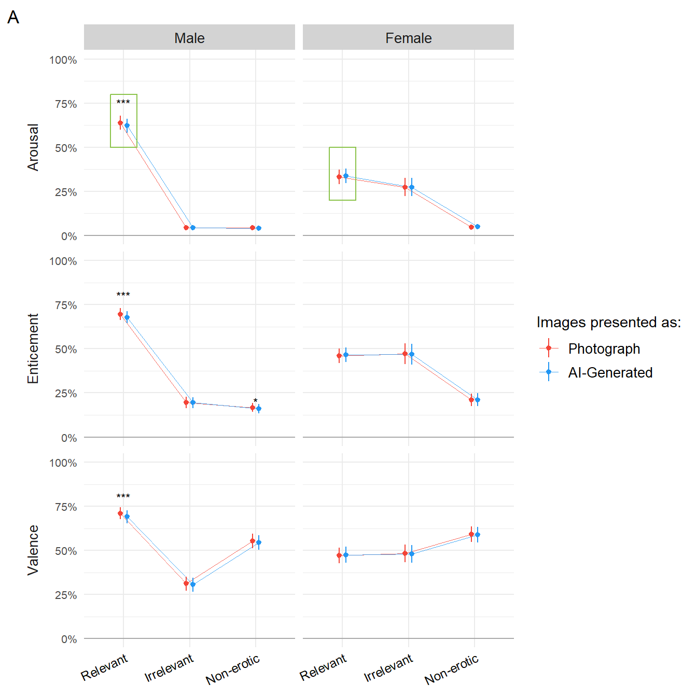
m1 <- glmmTMB::glmmTMB(Arousal ~ Sex / Condition + (Condition | Participant) + (1|Item),
data=filter(df, Relevance=="Relevant"),
family=glmmTMB::ordbeta(),
control = glmmTMB::glmmTMBControl(parallel = 8))
m2 <- glmmTMB::glmmTMB(Arousal ~ Sex / Condition + (Condition | Participant) + (1|Item),
data=filter(df, Relevance=="Relevant", ConditionBelief == "True"),
family=glmmTMB::ordbeta(),
control = glmmTMB::glmmTMBControl(parallel = 8))
m3 <- glmmTMB::glmmTMB(Arousal ~ Sex / Condition + (Condition | Participant) + (1|Item),
data=filter(df, Relevance=="Relevant", ConditionBelief == "True", Feedback_AILessArousing=="True"),
family=glmmTMB::ordbeta(),
control = glmmTMB::glmmTMBControl(parallel = 8))
stars2 <- data.frame(label=c("***", "***", "***", "***", "*"),
Sex=fct_relevel(c("Male", "Male", "Male", "Female", "Female"),
"Male", "Female"),
Type=c("All trials", "Believed trials", "'AI was less arousing'", "Believed trials", "'AI was less arousing'"),
y=c(0.76, 0.76, 0.76, 0.45, 0.45))
pred2 <- rbind(
estimate_relation(m1) |>
mutate(Type = "All trials"),
estimate_relation(m2) |>
mutate(Type = "Believed trials"),
estimate_relation(m3) |>
mutate(Type = "'AI was less arousing'")
)
p2 <- pred2 |>
mutate(Type = fct_relevel(Type, "All trials", "Believed trials", "'AI was less arousing'")) |>
ggplot(aes(x=Type, y=Predicted)) +
geom_hline(yintercept=0, color="darkgrey") +
geom_line(aes(group=Condition, color=Condition), position = position_dodge(width=0.2), alpha=0.8, linewidth=0.1) +
geom_bar(stat="identity", aes(fill=Condition), position = position_dodge(width=0.2), width=0.2, alpha=0.6) +
geom_pointrange(aes(ymin = CI_low, ymax=CI_high, color=Condition), position = position_dodge(width=0.2), size=0.2) +
geom_rect(data=data.frame(Type="All trials", Predicted=0.1, Sex=as.factor("Male")),
aes(xmin=0.7, xmax=1.3, ymin=0.55, ymax=0.7), color="#8BC34A", alpha=0) +
geom_rect(data=data.frame(Type="All trials", Predicted=0.1, Sex=as.factor("Female")),
aes(xmin=0.7, xmax=1.3, ymin=0.25, ymax=0.4), color="#8BC34A", alpha=0) +
geom_text(data=stars2, aes(y=y, label=label), hjust=0.5, size=3) +
facet_grid(~Sex) +
scale_y_continuous(labels=scales::percent) +
scale_color_manual(values=c("AI-Generated"="#2196F3", "Photograph"="#F44336")) +
scale_fill_manual(values=c("AI-Generated"="#2196F3", "Photograph"="#F44336")) +
labs(y="Arousal",
tag = "B") +
theme_minimal() +
theme(axis.title.x = element_blank(),
axis.text.x = element_text(angle=25, hjust=1, vjust=1.1, size=9),
axis.text.y = element_text(size = 8),
axis.title.y = element_text(size = 10),
strip.placement = "outside",
strip.background.x = element_rect(fill=c("lightgrey"), color=NA),
strip.text.x = element_text(size = 10),
legend.position = "none")
p1 | p2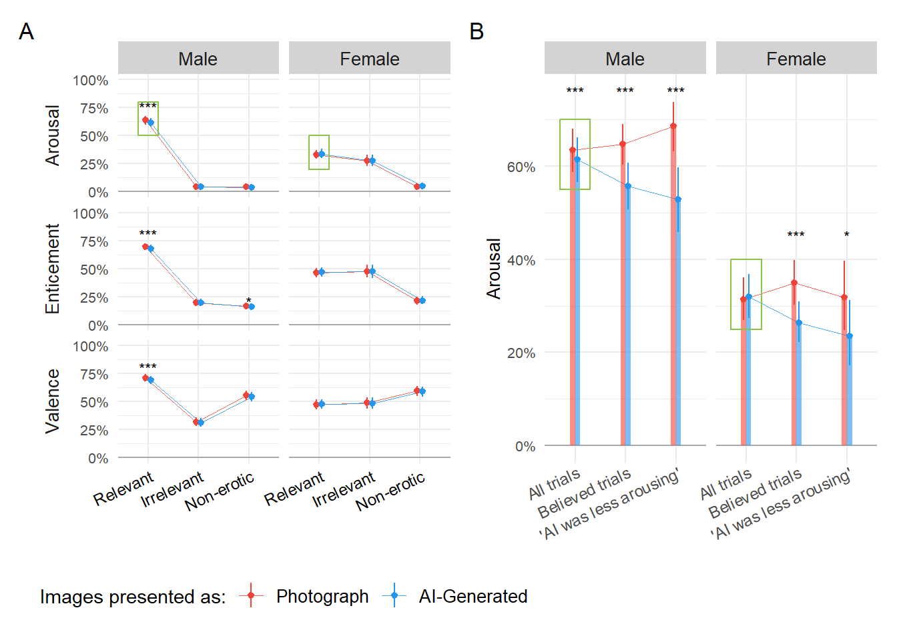
m6 <- glm(Feedback_AILessArousing ~ Sex / BAIT_Visual,
data=mutate(dfsub, Feedback_AILessArousing = ifelse(Feedback_AILessArousing=="True", 1, 0)),
family="binomial")
results_table(m6)| Parameter | Log-Odds | SE | 95% CI | z | p |
|---|---|---|---|---|---|
| (Intercept) | -0.65 | 0.99 | (-2.66, 1.26) | -0.66 | 0.510 |
| Sex (Male) | 0.37 | 1.16 | (-1.87, 2.69) | 0.32 | 0.747 |
| Sex (Female) × BAIT Visual | -2.35 | 1.48 | (-5.30, 0.54) | -1.59 | 0.112 |
| Sex (Male) × BAIT Visual | -2.79 | 0.93 | (-4.64, -1.00) | -3.02 | 0.003 |
pred3 <- estimate_relation(m6, length=50)
p3 <- pred3 |>
mutate(Sex = fct_relevel(Sex, "Male", "Female")) |>
ggplot(aes(x=BAIT_Visual, y=Predicted)) +
geom_hline(yintercept=0, color="darkgrey") +
geom_ribbon(aes(ymin=CI_low, ymax=CI_high), alpha=0.3) +
geom_line() +
geom_text(data=data.frame(Sex = as.factor("Male")), aes(x=0.65, y=0.25), label="**") +
facet_grid(~Sex) +
scale_y_continuous(labels=scales::percent, expand=c(0, 0)) +
scale_x_continuous(breaks = c(0.3, 0.5, 0.7, 0.9)) +
labs(y = "\nProbability of 'AI was less arousing' Feedback\n",
x = "\nBeliefs about Artificial Information Technology (BAIT)\n'AI algorithms can generate realistic images'",
tag = "C") +
theme_minimal() +
theme(strip.text = element_blank(),
axis.text.y = element_text(size = 8),
axis.title.y = element_text(size = 10),
axis.text.x = element_text(size = 8),
axis.title.x = element_text(size = 10))
p4 <- patchwork::wrap_plots(p2 / p3 + plot_layout(heights = c(1, 1.6)))
p <- patchwork::wrap_plots(p1 | p4, guides="collect")
p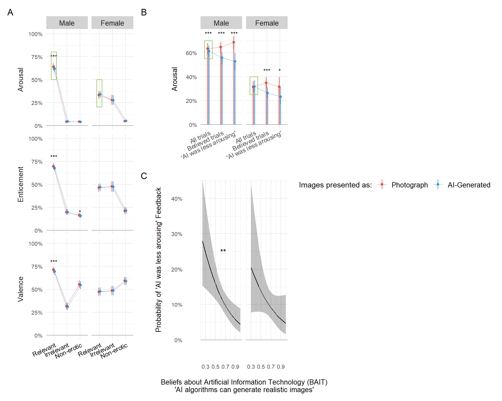
ggsave("figures/figure1.png", p, width=10, height=8, dpi=300)m4 <- glmmTMB::glmmTMB(Arousal ~ SexualActivity / Sex / Condition + (Condition | Participant) + (1|Item),
data=filter(df, Relevance=="Relevant", ConditionBelief == "True"),
family=glmmTMB::ordbeta(),
control = glmmTMB::glmmTMBControl(parallel = 8))
summary(m4)
pred3 <- estimate_relation(m4)
pred3 |>
mutate(xnum = as.numeric(as.factor(SexualActivity))) |>
ggplot(aes(x=SexualActivity, y=Predicted)) +
# geom_ribbon(aes(x=xnum, ymin=CI_low, ymax=CI_high, fill=Condition), alpha=0.5) +
geom_line(aes(group=Condition, color=Condition), position = position_dodge(width=0.2)) +
geom_pointrange(aes(ymin = CI_low, ymax=CI_high, color=Condition), position = position_dodge(width=0.2)) +
facet_grid(~Sex)
m5 <- glmmTMB::glmmTMB(Arousal ~ Sex / (Condition * GAAIS_Negative) + (Condition | Participant) + (1|Item),
data=filter(df, Relevance=="Relevant", ConditionBelief == "True"),
family=glmmTMB::ordbeta(),
control = glmmTMB::glmmTMBControl(parallel = 8))
summary(m5)
pred4 <- estimate_relation(m5, length=30)
pred4 |>
ggplot(aes(x=GAAIS_Negative, y=Predicted)) +
geom_line(aes(group=Condition, color=Condition)) +
facet_grid(~Sex)